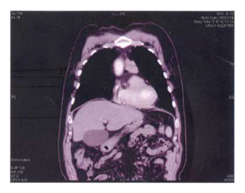
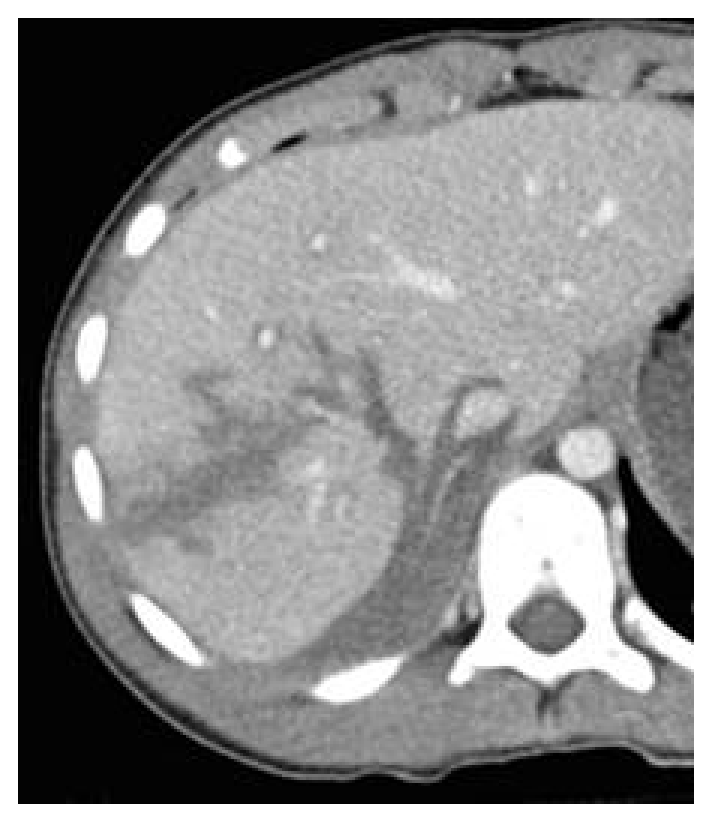
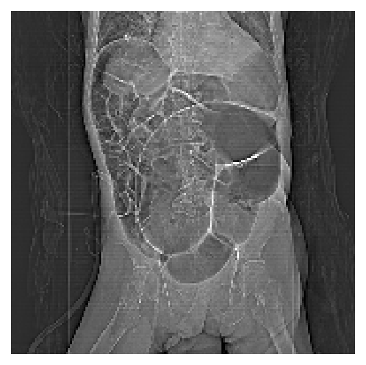
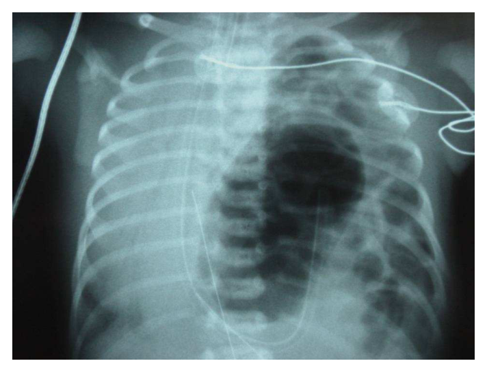
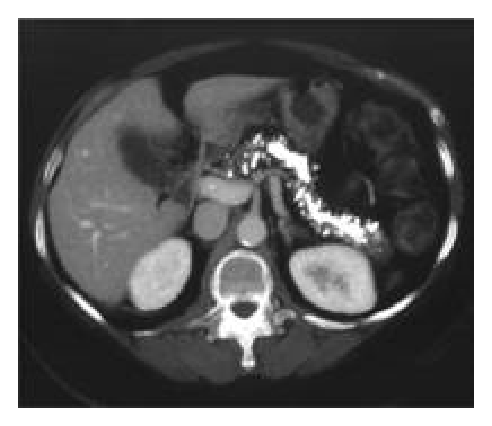
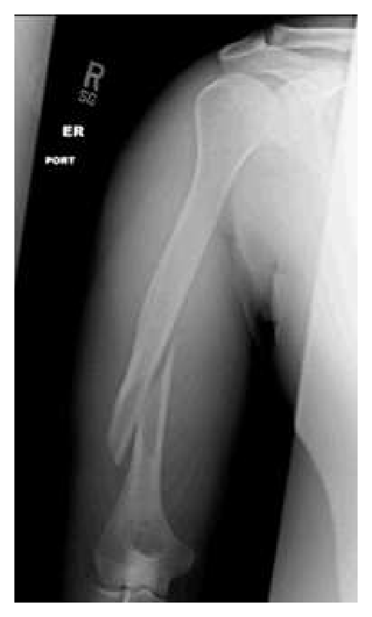
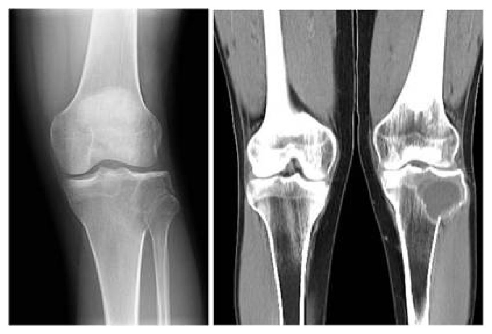
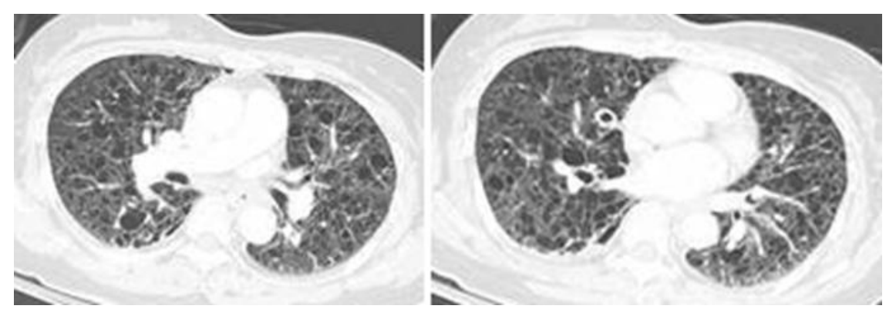

開卷有益 ／
醫師 ／ 醫學（五）（包括外科、骨科、泌尿科等科目及其相關臨床實例與醫學倫理） ／ 104 年104 年醫師醫學（五）（包括外科、骨科、泌尿科等科目及其相關臨床實例與醫學倫理）試題與答案
這一頁是民國 104 年醫師醫學（五）（包括外科、骨科、泌尿科等科目及其相關臨床實例與醫學倫理）的整份歷屆試題，共 80 題，題目與標準答案出自考選部「國家考試試題及測驗式試題答案」開放資料，其中 80 題附有詳解。以下逐題列出題幹、選項與答案；要計時作答或記錄成績，請用線上練習。
考選部原始場次代碼：104090
線上作答這一科 →
全部 80 題
第 1 題
70歲男性，機械性人工二尖瓣瓣膜置換手術後，術後三小時，胸腔引流管之流量逐漸減少，但是中心靜脈壓逐漸上升，尿量逐漸減少，心跳逐漸加快，動脈壓逐漸下降。此時要鑑別診斷是心包填塞（cardiac tamponade）或是術後心臟失能（myocardial dysfunction），最好的診斷工具為下列何者？
（A） 心臟超音波（B） 胸部X光（C） 胸動脈導管（swan ganz catheter）（D） 動脈血氣體分析答案：（A）
詳解與考點 正解：心臟手術後胸管流量減少，卻出現 CVP 上升、少尿、心搏過速及低血壓，須區分心包填塞與心肌失能。床邊心臟超音波可直接觀察心包積液、心腔舒張期塌陷、心室收縮功能及容量狀態，因此能同時鑑別兩者，故選 A。
B：胸部 X 光可見心影或肺部變化，但急性術後心包填塞的心影未必增大，且不能即時評估心腔受壓與收縮功能，鑑別力不足。
C：Swan-Ganz catheter 可提供肺動脈壓、肺微血管楔壓與心輸出量等血流動力資料；兩種情況皆可能造成低心輸出，數值重疊，故看似有用卻不如超音波能直接分辨病因。
D：動脈血氣體分析可評估氧合、通氣與酸鹼狀態，但無法辨認心包受壓或心肌收縮失能，非最佳診斷工具。
本題考點：術後心包填塞（cardiac tamponade）造成阻塞性休克；心肌失能（myocardial dysfunction）造成心因性低心輸出；床邊心臟超音波（echocardiography）可直接鑑別心包壓迫與心室功能。
第 2 題
一名墜樓的傷患，抵達急診時，檢查發現以下徵候：①氣管往右側偏移 ②左側胸部呼吸聲微弱 ③左側胸壁出現皮下氣腫（subcutaneous emphysema） ④收縮壓低於90 mmHg⑤呼吸速率每分鐘26次。則下列何種診斷最為可能？
（A） 右側大量血胸（right massive hemothorax）（B） 右側張力性氣胸（right tension pneumothorax）（C） 左側張力性氣胸（left tension pneumothorax）（D） 心包膜填塞（cardiac tamponade）答案：（C）
詳解與考點 正解：左側呼吸音微弱與皮下氣腫，合併低血壓、呼吸急促及氣管向右偏移。左胸高壓氣體會壓迫左肺並把縱隔推向右側，阻礙靜脈回流而造成休克，最符合左側張力性氣胸，故選 C。
A：右側大量血胸應主要造成右側呼吸音下降與縱隔受壓表現，無法解釋左側胸部的局部徵候。
B：右側張力性氣胸會將氣管推向左側，與本題向右偏移相反；側別是此題最重要的誘答辨識點。
D：心包膜填塞可造成低血壓與心搏過速，但不會造成單側呼吸音減弱、皮下氣腫或氣管偏移，故不符。
本題考點：張力性氣胸（tension pneumothorax）的臨床診斷依賴單側呼吸音下降、皮下氣腫、氣管偏移與阻塞性休克；創傷初級評估（primary survey）中遇疑似張力性氣胸應優先減壓處置。
第 3 題
對於疑似敗血症伴有低血壓的成人急救流程（protocol for resuscitation of adult hypotensivepatients with suspected sepsis），下列何者不適當？
（A） 做體液培養，包括血液（B） 放中央靜脈或是肺動脈導管，保持CVP/PAWP level＜8 mmHg（C） 復甦的目標定在平均血壓大於65 mmHg或是脈搏小於120 beats/min（D） 監測靜脈氧氣濃度和尿量答案：（B）
詳解與考點 正解：官方答案為 B；惟（C）的「或」字使選項措辭不嚴謹。敗血症合併低血壓的復甦目標是恢復足夠組織灌流；將 CVP 或 PAWP 維持在小於 8 mmHg，可能代表前負荷不足，不能作為復甦目標，因此（B）不適當。
A：在抗生素治療前盡可能取得血液及其他疑似感染源的培養，有助辨認病原並後續調整治療，屬合理流程。
C：平均動脈壓大於 65 mmHg 可作為初始灌流目標，但脈搏小於 120 beats/min 只能是輔助趨勢，不能以「或」取代灌流壓與器官灌流指標；故此選項文字亦有爭議。
D：靜脈血氧與尿量可反映氧輸送、組織灌流及器官功能，持續監測有助判斷復甦效果。
本題考點：敗血症休克復甦（septic shock resuscitation）；前負荷（preload）；平均動脈壓（mean arterial pressure）與尿量須和其他灌流指標整合判讀。
第 4 題
下列敘述，何者錯誤？
（A） 營養不良會導致傷口癒合延遲（B） 傷口蓋上敷料之目的為保護傷口、防止細菌感染及吸收傷口之滲液（C） 污染傷口（contaminated wounds）最適當的治療方法是清創（debridement）後立即縫合傷口（D） 巨噬細胞（macrophages）和嗜中性粒細胞（neutrophils）是傷口癒合炎症期的主要細胞答案：（C）
詳解與考點 正解：污染傷口的處置。污染傷口即使完成清創，仍有較高細菌負荷；通常須依污染程度、組織活性與後續觀察決定延遲閉合或其他處理，不能把「清創後立即縫合」視為一律最適當的方法，故錯誤的是 C。
A：營養不良會使膠原蛋白生成、免疫反應與組織修復受損，確實會延遲傷口癒合。
B：適當敷料可保護傷口、管理滲液並降低外來污染；敷料不是取代清創或抗感染治療，但敘述的目的正確。
D：嗜中性粒細胞與巨噬細胞是發炎期的主要細胞，前者早期清除病原，後者負責清除與調控修復，故正確。
本題考點：傷口癒合（wound healing）包含發炎期、增生期與重塑期；污染傷口（contaminated wound）須以細菌負荷與組織狀態決定閉合時機；清創（debridement）是移除壞死與污染組織的基本處置。
第 5 題
下列對於再餵食症候群（refeeding syndrome） 的敘述，何者錯誤？
（A） refeeding syndrome又稱為magnesium steal syndrome（B） 為避免refeeding syndrome，在給予大量營養時要添加鎂（magnesium）、鉀（potassium）和磷（phosphate）（C） 避免refeeding syndrome最好的方法是隨時調整TPN（total parenteral nutrition）的量和電解質（D） 當病患大量嘔吐時要補充鉀（potassium）答案：（A）
詳解與考點 正解：再餵食症候群（refeeding syndrome）發生於長期營養不足者重新給予熱量後，胰島素上升使磷、鉀、鎂移入細胞，造成血中電解質下降。它不是 magnesium steal syndrome；低磷血症尤其是代表性異常，故（A）錯誤，選 A。
B：監測並補充磷、鉀、鎂是合理的預防部分；但「給予大量營養」措辭不精確，高風險病人不應因補充電解質便直接大量餵食。
C：調整 TPN 與電解質方向正確，但預防還須以低熱量起始、逐步增加及補充 thiamine，不能只依此一項處理。
D：大量嘔吐可造成鉀流失與代謝性鹼中毒傾向，評估後補充鉀是適當處置，與再餵食症候群的命名無關。
本題考點：再餵食症候群（refeeding syndrome）；低磷血症（hypophosphatemia）；全靜脈營養（total parenteral nutrition, TPN）須低量起始、逐步給予並監測電解質。
第 6 題
50歲男性，無明顯症狀，影像檢查如圖所示，請選出最合適的描述：

（A） 肝臟有一囊腫，位於肝門附近（B） 有一腫瘤位於後縱膈腔（C） 超音波抽吸可改善其壓迫症狀（D） 需考慮手術的可能答案：（D）
詳解與考點 正解：此影像所示病灶，即使目前無明顯症狀，也應評估其性質、大小、壓迫風險與惡性可能，必要時考慮手術切除或其他外科處置，故選 D。
A：圖中的病灶不是典型位於肝實質內、肝門附近的單純肝囊腫外觀；其位置與占位範圍較不支持此描述。
B：後縱膈腔位於心臟後方且在橫膈以上；圖示病灶主要位在橫膈以下的上腹部，並不符合後縱膈腫瘤的位置。
C：超音波導引抽吸僅適用於特定液體性病灶的暫時減壓，且可能復發或無法取得完整診斷；對此類需先釐清性質的占位病灶，不能把抽吸當作最合適的處置。
本題考點：腹部偶發性腫塊（incidental abdominal mass）的影像定位；腹部腫瘤（abdominal tumor）的外科評估；手術適應症（surgical indication）須綜合病灶大小、位置、症狀、壓迫效應與惡性風險判斷。
第 7 題
一般而言，顱縫早閉（craniosynostosis）的病童，何時進行手術治療較適當？
（A） 三個月內（B） 三到六個月內（C） 六到十八個月（D） 兩歲以上本題送分，無標準答案
詳解與考點 本題官方公告送分。
第 8 題
Glioblastoma multiforme（GBM）屬於WHO classification system of glioma中的：
（A） Grade Ⅰ（B） Grade Ⅱ（C） Grade Ⅲ（D） Grade Ⅳ答案：（D）
詳解與考點 正解：glioblastoma multiforme 的病理惡性度。GBM 具有高度細胞異型性、微血管增生與壞死等高度惡性特徵，在傳統 WHO glioma 分級中屬 Grade IV，故選 D。
A：Grade I 多為較局限、相對低惡性的腫瘤，與 GBM 的高度浸潤及惡性生物學行為不符。
B：Grade II 雖可為瀰漫性膠質瘤，但惡性度低於 GBM，通常不以壞死及微血管增生為典型特徵。
C：Grade III 為間變性膠質瘤，已有顯著異型與增生；但 GBM 的壞死與微血管增生使其分級更高，故不是 Grade III。
本題考點：膠質瘤分級（glioma grading）依組織學惡性特徵區分；多形性膠質母細胞瘤（glioblastoma multiforme, GBM）是傳統 WHO Grade IV 膠質瘤；壞死與微血管增生提示高度惡性。
第 9 題
下列有關頸椎脫位性骨折治療的敘述，何者錯誤？
（A） 牽引的重量依不同的頸椎而有不同（B） 牽引後須密切觀察病人神經學症狀（C） 牽引後須追蹤病人的頸椎X-ray（D） 調整重量後若無神經學的改變，不須再追蹤頸椎X-ray答案：（D）
詳解與考點 正解：頸椎脫位性骨折以牽引復位時，調整牽引重量後仍須確認復位與排列。即使神經學檢查沒有變化，也可能出現過度牽引、脫位未復位或排列惡化，故不再追蹤頸椎 X 光的（D）錯誤，選 D。
A：不同節段、傷型與病人體型所需牽引重量不同，須個別調整，敘述正確。
B：牽引過程可能造成或加重神經損傷，須反覆檢查神經學症狀，故正確。
C：牽引後以頸椎 X 光追蹤排列與復位狀態，是確認處置安全與有效的重要方法，故正確。
本題考點：頸椎脫位性骨折（cervical fracture-dislocation）需兼顧復位與神經保護；牽引復位（traction reduction）後須持續神經學評估；影像追蹤（radiographic follow-up）可確認節段排列。
第 10 題
下列何種顱縫早閉（craniosynostosis )最常見？
（A） 人狀縫骨縫早閉（lambdoid synostosis）（B） 冠狀縫骨縫早閉（coronal synostosis）（C） 矢狀縫骨縫早閉（isolated sagittal synostosis）（D） 額骨骨縫早閉（metopic synostosis）答案：（C）
詳解與考點 正解：「最常見」的單一顱縫早閉。矢狀縫是最常見受累顱縫，單純矢狀縫早閉會限制頭顱橫向擴張並形成舟狀頭，因此選 C。
A：人狀縫早閉相對少見，雖可造成後頭部不對稱，但不是最常見類型。
B：冠狀縫早閉可見額部及眶周不對稱；它是常見類型之一，卻仍少於單純矢狀縫早閉。
D：額縫早閉可造成三角頭（trigonocephaly），是特徵鮮明的誘答，但整體發生率不是最高。
本題考點：顱縫早閉（craniosynostosis）為顱縫過早融合；矢狀縫早閉（sagittal synostosis）最常見；不同受累顱縫造成不同頭型變化。
第 11 題
下列何種做法，無法讓嚴重頭部外傷病人的腦壓降低？
（A） 平躺（B） 止痛（C） 使用鎮定劑（D） 腦脊髓液引流答案：（A）
詳解與考點 正解：嚴重頭傷的顱內壓控制。平躺會降低頭部相對於心臟的高度，減少頸靜脈回流，可能使顱內靜脈血量增加，不能用來降低腦壓，故選 A。
B：適當止痛可減少疼痛引起的交感刺激、躁動與咳嗽，避免這些因素使顱內壓上升，故有助控制腦壓。
C：鎮定可減少躁動與代謝需求，在適當監測下可協助控制顱內壓，故非答案。
D：腦脊髓液引流可直接減少顱內腦脊髓液容積，是處理顱內壓升高的方式之一，故正確。
本題考點：顱內壓（intracranial pressure, ICP）受腦組織、血液與腦脊髓液容積影響；抬高頭部有助靜脈回流；腦脊髓液引流（cerebrospinal fluid drainage）可直接降低顱內內容物容積。
第 12 題
下列關於脊椎病理性骨折（pathologic fracture）的敘述，何者錯誤？
（A） 多為轉移性腫瘤（metastatic tumor）造成（B） 常見的腫瘤來源為肺癌、乳癌等（C） 判斷腫瘤對於脊髓壓迫的嚴重程度時，CT比MRI更適合（D） 當病患下肢日漸無力或有大小便失禁等症狀時應考慮手術減壓答案：（C）
詳解與考點 正解：判斷脊椎腫瘤對脊髓壓迫的嚴重程度。MRI 對脊髓、硬膜外腫瘤、神經根與軟組織的顯示優於 CT；CT 雖適合評估骨質破壞，卻不是判讀脊髓壓迫最適合的工具，因此（C）錯誤，故選 C。
A：脊椎病理性骨折常由轉移性腫瘤造成，尤其在有癌症病史的成人須高度警覺，敘述正確。
B：肺癌、乳癌等惡性腫瘤常轉移至脊椎，是病理性骨折與脊髓壓迫的重要來源，故正確。
D：進行性下肢無力或大小便功能障礙提示脊髓或馬尾受壓；須緊急評估減壓手術等治療，故敘述正確。
本題考點：脊椎轉移（spinal metastasis）可造成病理性骨折與脊髓壓迫（spinal cord compression）；磁振造影（magnetic resonance imaging, MRI）最適合評估神經壓迫；進行性神經缺損是緊急處置警訊。
第 13 題
在兒童受虐（child abuse）的表現中，下列何者為最少見之臨床表徵？
（A） 長骨同時可見急性及癒合骨折（acute and healing long-bone fractures）（B） 腦半球間硬腦膜下血腫（interhemispheric subdural hematoma）（C） 顱骨頂骨骨折（parietal skull fracture）（D） 視網膜出血（retinal hemorrhages）答案：（C）
詳解與考點 正解：官方答案為 C；惟「最少見」須以受虐案例中的相對發生頻率判定，不能只用特異性推論。單純頂骨骨折雖較常見於意外傷害且非特異的受虐線索，依題庫命題選 C；題幹未提供足以比較各表徵盛行率的資料，故把握度低。
A：同時可見急性與癒合中的長骨骨折表示傷害發生於不同時間點，與反覆非意外傷害相符，故不是最少見的受虐線索。
B：腦半球間硬腦膜下血腫是嬰幼兒受虐性頭部創傷須注意的顱內出血型態，故非答案。
D：視網膜出血可見於受虐性頭部創傷；雖需結合整體臨床情境判讀，但屬重要警訊。
本題考點：兒童受虐（child abuse）的傷勢型態；非意外傷害（nonaccidental injury）的特異性不等同於發生頻率；受虐性頭部創傷（abusive head trauma）可合併硬腦膜下血腫與視網膜出血。
第 14 題
下列何者不適於斷指重接（replantation）？
（A） 全手掌（complete plam）截斷（B） 部份大拇指（partial thumb）截斷（C） 多層（multiple levels）截斷（D） 多指（multiple digits）截斷答案：（C）
詳解與考點 正解：斷指重接的適應性取決於可恢復的功能、組織損傷程度與手術可行性。多層截斷代表同一肢段有多個受傷平面，血管、神經與肌腱修復複雜且遠端功能預後差，通常不適合重接，故選 C。
A：全手掌截斷會造成重大功能喪失，若條件允許，重接可望保留整體手部功能，是重要適應症。
B：拇指對捏、抓握與手部功能至關重要，即使是部分拇指截斷也常積極考慮重接，故非不適應症。
D：多指截斷會顯著損害抓握功能，若可行，重接能保留多指協調與手部功能，故通常應考慮。
本題考點：斷肢重接（replantation）重視預期功能而非僅組織存活；拇指截斷（thumb amputation）與多指截斷（multiple digit amputation）是常見重接適應症；多層截斷（multiple-level amputation）因修復與功能預後不佳而多不適合。
第 15 題
關於脛骨開放性骨折的Gustilo classification，下列敘述何者錯誤？
（A） 第I級，開放性骨折，傷口小於1公分（B） 第II級，開放性骨折，傷口大於1公分，未合併廣泛的軟組織損傷（C） 第IIIB級，開放性骨折，合併廣泛的軟組織損傷，但軟組織仍足夠覆蓋傷口（D） 第IIIC級，開放性骨折，合併廣泛的軟組織損傷及任何需要修補的動脈損傷答案：（C）
詳解與考點 正解：Gustilo 開放性骨折第 IIIB 級的軟組織覆蓋狀態。第 IIIB 級有廣泛軟組織損傷、骨膜剝離或骨暴露，通常需要皮瓣等軟組織覆蓋；稱軟組織仍足以覆蓋傷口的（C）與定義不符，故選 C。
A：第 I 級為低能量、傷口較小且污染較少的開放性骨折，傷口小於 1 公分的描述正確。
B：第 II 級傷口大於 1 公分，但沒有廣泛軟組織損傷、皮瓣剝離或嚴重污染，敘述正確。
D：第 IIIC 級的關鍵是不論軟組織傷害程度，只要合併需修補的動脈損傷即屬之，故正確。
本題考點：Gustilo 分類（Gustilo classification）用於開放性骨折（open fracture）的傷口與軟組織嚴重度分級；第 IIIB 級需軟組織覆蓋；第 IIIC 級以需血管修補的動脈損傷為定義要點。
第 16 題
重建手術時，小血管的吻合（anastomosis）最常使用的方式是：
（A） 末端與末端吻合（end-to-end anastomosis）（B） 末端與側面的吻合（end-to-side anastomosis）（C） 末端與靜脈移植段（vein graft）之間的吻合（D） 末端與動脈移植段（arterial graft）之間的吻合答案：（A）
詳解與考點 正解：重建手術中小血管最常用的基本吻合方式。若兩端血管口徑與長度可配合，末端與末端吻合能恢復最直接的連續血流，操作標準化且最常使用，故選 A。
B：末端與側面吻合適用於特定血流重建需求或需保留受體血管時，但不是一般小血管吻合最常用的基本方式。
C：靜脈移植段用於血管缺損過長、無法無張力對接時；它是補救或重建選項，不是所有吻合的常規首選。
D：動脈移植段亦只在特定重建情境使用，取材與適應症較受限，故非最常使用的方式。
本題考點：顯微血管吻合（microvascular anastomosis）以無張力、良好血流及精確內膜對合為原則；末端與末端吻合（end-to-end anastomosis）最常用；血管移植（vascular graft）用於存在血管缺損時。
第 17 題
扳機指（trigger finger）為一種stenosing tenosynovitis ，發生在下列那一個pulley的位置？
（A） A1（B） A2（C） A3（D） A4答案：（A）
詳解與考點 正解：扳機指為狹窄性腱鞘炎，病灶在屈指肌腱通過近端掌指關節處的滑車時受阻。最常受累的是 A1 pulley，肌腱結節通過時便出現卡住、彈響或需用力伸直的現象，故選 A。
B：A2 pulley 主要位於近節指骨區域，對維持屈肌腱貼骨走行重要，但不是典型扳機指的狹窄位置。
C：A3 pulley 位於近端指間關節附近，與典型掌指關節處的扳機指病灶不符。
D：A4 pulley 位於中節指骨區域，亦非狹窄性腱鞘炎最常發生的位置。
本題考點：扳機指（trigger finger）是狹窄性腱鞘炎（stenosing tenosynovitis）；A1 pulley 位於掌指關節附近；屈指肌腱（flexor tendon）增厚或腱鞘狹窄會造成彈響與卡住。
第 18 題
肌肉組織是對缺血（ischemia）最敏感的組織之一，則約在缺血多少小時後，肌肉組織將發生不可逆（irreversible）的變化 ？
（A） 2小時（B） 4小時（C） 6小時（D） 8小時答案：（D）
詳解與考點 正解：官方答案為 D；惟肌肉不可逆損傷並非在 8 小時才開始。完全缺血時，骨骼肌不可逆變化可約自 3–4 小時開始，約 6 小時已相當顯著；8 小時較可描述長時間完全缺血後廣泛不可逆傷害或肢體通常難以挽救的階段，因此題幹用語與生理資料有落差。
A：2 小時已可能出現代謝異常與可逆細胞損傷，但通常不是不可逆損傷開始的典型時間點。
B：4 小時可能已開始發生不可逆肌肉損傷，故此選項反映本題答案的主要爭議。
C：6 小時的缺血傷害已相當嚴重，臨床上須視為急迫再灌流時間窗，不能延誤處置。
本題考點：肢體缺血（limb ischemia）；不可逆缺血傷害（irreversible ischemic injury）會受完全程度與側枝循環影響；急性肢體缺血（acute limb ischemia）宜在 4–6 小時內爭取再灌流。
第 19 題
關於頭頸部重建，下列敘述何者錯誤？
（A） 胸大肌肌皮瓣（pectoralis major myocutaneous flap）由胸肩峰動脈（thoracoacromialartery）供應血流，可以用來重建鼻咽處的組織缺損（B） 肩胸皮瓣（deltopectoral flap (Bakamjian flap)）由內乳動脈（internal mammary artery）的肋間穿通支（intercostal perforating branches）供應血流，目前仍被廣泛應用於頭頸部重建（C） 橈側前臂皮瓣（radial forearm flaps）為目前重建頭頸部軟組織的重要來源（D） 1998年，在顯微手術的輔助下，成功完成第一例的人類異體喉移植答案：（B）
詳解與考點 正解：頭頸部重建中各皮瓣的現今角色。肩胸皮瓣（deltopectoral flap）以內乳動脈穿通支為血流來源雖正確，但在游離皮瓣成熟後，已非目前頭頸部重建的廣泛主力；因此（B）將其描述為「目前仍被廣泛應用」不正確，故選 B。
A：胸大肌肌皮瓣（pectoralis major myocutaneous flap）由胸肩峰動脈供血，可作為有蒂皮瓣重建頭頸部缺損，敘述正確，故非答案。
C：橈側前臂皮瓣（radial forearm flap）皮瓣薄、血管蒂可靠且可塑性高，是頭頸部軟組織游離皮瓣重建的重要選擇，敘述正確。
D：人類異體喉移植在顯微手術發展後已有成功個案；本題所列歷史敘述並非皮瓣選擇錯誤所在，故非答案。
本題考點：頭頸部重建（head and neck reconstruction）——有蒂皮瓣與游離皮瓣的適應症不同；肩胸皮瓣（deltopectoral flap）是重要歷史皮瓣，但現代常由游離皮瓣取代；橈側前臂皮瓣（radial forearm flap）適合薄而具延展性的軟組織重建。
第 20 題
下列有關心包膜疾病之敘述，何者錯誤？
（A） 正常人的心包膜液約為20 mL，創傷性急性心包膜填塞積液一旦達40 mL，壓力便會急速上升（B） 窄縮性心包膜炎（constrictive pericarditis）與限制性心肌病變（restrictivecardiomyopathy）的鑑別診斷往往需要藉由右側心導管的壓力追蹤圖來區分（C） 在次發性惡性心包膜積液（secondary malignant pericardial effusion）的病人中，男性及女性皆以肺癌最為常見（D） 因為窄縮性心包膜炎（constrictive pericarditis）而接受心包膜切除手術（pericardiectomy）的病人中，以radiation-induced的窄縮性心包膜炎（constrictivepericarditis）預後最佳答案：（D）
詳解與考點 正解：官方答案為 D；惟（C）與（A）的精確數值均使題目有爭議。放射線造成的窄縮性心包膜炎常合併心肌纖維化與其他放射線心臟傷害，心包膜切除術後效果及預後反而較差，因此（D）稱預後最佳錯誤。
A：急性創傷出血時，心包膜尚未有時間伸展，少量快速增加的積液即可使腔內壓急升而造成填塞；但正常心包膜液量及壓力轉折受定義、速率與順應性影響，不能把 20 mL 或 40 mL 當作固定門檻。
B：窄縮性心包膜炎與限制型心肌病變皆可呈舒張充盈受限，右心導管壓力波形及呼吸相關心室交互作用可協助鑑別，敘述正確。
C：惡性心包膜積液的原發腫瘤分布與性別及研究族群相關；若主張兩性皆以肺癌最常見，須有相應資料支持，女性常見乳癌來源使此最高級命題具爭議。
本題考點：窄縮性心包膜炎（constrictive pericarditis）；心包膜切除術（pericardiectomy）的預後受病因影響；惡性心包膜積液（malignant pericardial effusion）的原發腫瘤分布須依族群判讀。
第 21 題
單純性主動脈窄縮症（isolated coarctation of aorta）之手術治療，可以包括下列那些術式？①開放性動脈導管置放支架（stent） ②鎖骨下動脈皮瓣主動脈成形術（subclavian flapaortoplasty） ③布塊擴大術（patch augmentation） ④廣泛切除窄縮部分再兩端吻合（extended resection with primary anastomosis）
（A） ①②（B） ①③（C） ①④（D） ②③④答案：（D）
詳解與考點 正解：「單純性主動脈窄縮症」可採的修補術式。鎖骨下動脈皮瓣主動脈成形術、布塊擴大術，以及廣泛切除窄縮段後再兩端吻合，分別對應②、③、④，皆為外科重建方法；①開放性動脈導管置放支架不是其標準開放手術術式。故組合為②③④，選 D。
A：（A）只列①②，其中①不是主動脈窄縮的外科修補術，且漏列③、④，故錯。
B：（B）列①③，雖③可用，但①不正確且漏列②、④，故錯。
C：（C）列①④，雖④可用，但①不正確且漏列②、③，故錯。
本題考點：主動脈窄縮（coarctation of aorta）手術——可依年齡、窄縮範圍與解剖條件採鎖骨下動脈皮瓣成形術（subclavian flap aortoplasty）、布塊擴大術（patch augmentation）或切除後端對端吻合術（resection and anastomosis）。
第 22 題
完全型的房室瓣中隔缺損（complete form of atrioventricular septal defect）的病童，常因頑固性的心衰竭，需早期（出生後6個月內）手術治療，其手術步驟包括下列那些？ ①房室瓣狹窄之切開術 ②心房中隔缺損之修補 ③心室中隔缺損之修補 ④房室瓣逆流之修補術
（A） 僅①②（B） 僅①③（C） ①②③（D） ②③④答案：（D）
詳解與考點 正解：完全型房室瓣中隔缺損同時有心房中隔、心室中隔與共同房室瓣異常。根治手術需關閉心房中隔缺損、修補心室中隔缺損，並處理房室瓣逆流，正是②③④；①房室瓣狹窄切開術不是此病的核心修補步驟。故選 D。
A：（A）僅列①②，除了誤列①，也缺少心室中隔缺損及瓣膜逆流的處理，故錯。
B：（B）僅列①③，誤列①且漏列②、④，無法完成完整修補，故錯。
C：（C）列①②③，誤列①且漏列處理共同房室瓣逆流的④，故錯。
本題考點：完全型房室瓣中隔缺損（complete atrioventricular septal defect）——病灶包含心房中隔缺損、心室中隔缺損與共同房室瓣異常；根治術重點是中隔重建與房室瓣逆流修補。
第 23 題
下列病人需要接受二尖瓣膜置換手術，何者建議使用生物組織瓣膜（bioprosthetic tissuevalve）？
（A） 18歲的年輕人（B） 40歲病人合併長期規則洗腎以及高血鈣症（C） 40歲病人合併慢性心房震顫且長期規則服用抗凝血劑（D） 70歲病人合併慢性肺氣腫答案：（D）
詳解與考點 正解：二尖瓣置換的瓣膜選擇，要權衡生物瓣耐久性與機械瓣終身抗凝需求。70歲且有慢性肺氣腫的病人，年齡較高、預期生物瓣退化速度較慢，通常較適合生物組織瓣膜（bioprosthetic tissue valve），故選 D。
A：18歲病人壽命長，生物瓣較可能早期結構性退化而需再次手術；其看似可免除抗凝，但耐久性不足是主要問題，通常較傾向機械瓣。
B：長期洗腎及高血鈣會加速生物瓣鈣化與退化，故不利選擇生物瓣。
C：慢性心房顫動已需長期抗凝血治療，生物瓣「可避免抗凝」的優點不再存在，通常較傾向耐久性較佳的機械瓣。
本題考點：人工心瓣選擇（prosthetic valve selection）——生物瓣（bioprosthetic valve）可減少長期抗凝需求但耐久性較短；機械瓣（mechanical valve）耐久性佳但需抗凝，須依年齡、鈣化風險與既有抗凝適應症個別判斷。
第 24 題
食道弛緩不能（esophageal achalasia）的標準診斷工具為食道張力測試，關於esophagealachalasia之食道張力測試的診斷發現，下列何者錯誤？
（A） 食道無正常之蠕動（peristalsis）（B） 下食道括約肌（lower esophageal sphinter，LES）無正常之放鬆（C） 食道的蠕動壓力過高（D） 下食道括約肌（lower esophageal sphinter，LES）壓力過高答案：（C）
詳解與考點 正解：食道弛緩不能的食道壓力檢查：核心為蠕動消失與下食道括約肌放鬆障礙，並非「蠕動壓力過高」。因為正常推進性蠕動已喪失，（C）錯誤，故選 C。
A：食道體部缺乏正常蠕動是食道弛緩不能的典型壓力檢查發現，敘述正確。
B：下食道括約肌（LES）吞嚥後無法正常放鬆，造成食物通過食道胃交界處受阻，敘述正確。
D：LES 基礎壓可升高，是常見支持性發現；雖非每位病人均升高，並不違反本病的典型表現，故非答案。
本題考點：食道弛緩不能（esophageal achalasia）——高解析食道壓力測試（high-resolution manometry）重點為蠕動缺失（absent peristalsis）與食道胃交界處放鬆障礙（impaired LES relaxation）。
第 25 題
上段食道癌多為？
（A） 鱗狀細胞癌（squamous cell carcinoma）（B） 腺癌（adenocarcinoma）（C） sarcoma（D） adenosquamous cell carcinoma答案：（A）
詳解與考點 正解：上段食道癌的典型組織型態。上、中段食道癌以鱗狀細胞癌（squamous cell carcinoma）為典型，故選 A。遠端食道腺癌常與胃食道逆流及巴瑞特食道造成的柱狀上皮化生相關；不能以正常上段才有鱗狀上皮作為因果解釋。
B：腺癌（adenocarcinoma）較常見於下段食道及食道胃交界處，與巴瑞特食道相關；它看似也是常見食道癌，但部位分布不符上段食道。
C：肉瘤（sarcoma）可發生於食道但非常少見，非上段食道最常見惡性腫瘤。
D：腺鱗癌（adenosquamous cell carcinoma）為少見混合型腫瘤，非最常見型態。
本題考點：食道癌（esophageal carcinoma）；鱗狀細胞癌（squamous cell carcinoma）較常見於上、中段食道；腺癌（adenocarcinoma）較常見於遠端食道與食道胃交界處。
第 26 題
惡性氣管腫瘤的組織型態，下列何者最常見？
（A） adenoid cystic carcinoma（B） adenocarcinoma（C） squamous cell carcinoma（D） small cell carcinoma答案：（C）
詳解與考點 正解：惡性氣管腫瘤以鱗狀細胞癌（squamous cell carcinoma）最常見，故選 C。腺樣囊性癌亦是重要的原發氣管惡性腫瘤，但頻率次於鱗狀細胞癌。
A：腺樣囊性癌（adenoid cystic carcinoma）常見於氣管唾液腺型腫瘤，容易成為誘答；但並非成人惡性氣管腫瘤最常見者。
B：腺癌（adenocarcinoma）並非原發惡性氣管腫瘤的主要組織型態。
D：小細胞癌（small cell carcinoma）以肺部為典型原發部位，原發於氣管者少見。
本題考點：原發性氣管惡性腫瘤（primary malignant tracheal tumor）——鱗狀細胞癌（squamous cell carcinoma）最常見；腺樣囊性癌（adenoid cystic carcinoma）是另一重要的唾液腺型腫瘤。
第 27 題
縱隔腔腫瘤最少發生於下列何處？
（A） 前縱隔腔（anterior mediastinum）（B） 上縱隔腔（superior mediastinum）（C） 後縱隔腔（posterior mediastinum）（D） 中縱隔腔（middle mediastinum）答案：（D）
詳解與考點 正解：縱隔腫瘤的好發區。中縱隔主要容納心臟、大血管、氣管與肺門結構，原發腫瘤相較前、上、後縱隔少見，因此最少發生於中縱隔，選 D。
A：前縱隔是胸腺瘤、畸胎瘤與淋巴瘤等常見縱隔腫瘤所在，並非最少。
B：上縱隔可見甲狀腺下延性病灶、淋巴結及其他腫瘤，發生率並非最低。
C：後縱隔以神經源性腫瘤常見，故不是最少發生處。
本題考點：縱隔分區（mediastinal compartments）——前縱隔常見胸腺、胚細胞與淋巴性腫瘤；後縱隔常見神經源性腫瘤；中縱隔原發腫瘤相對少見。
第 28 題
正常的食道在食道攝影中，通常有三處狹窄之處，下列何者正確？ ①鄰近左心房處 ②在會厭軟骨附近 ③近橫膈膜處 ④近主動脈或氣管分岔處
（A） ①②③（B） ②③④（C） ①③④（D） ①②④答案：（B）
詳解與考點 正解：正常食道的三個生理狹窄位於環咽肌約 C6 處、主動脈弓或左主支氣管交叉處，以及橫膈食道裂孔。題目（②）「會厭軟骨附近」只能近似指稱上端狹窄，並非與環咽肌同一精確位置；連同（④）與（③）對照，最符合的是②③④，選 B。
A：（A）列①②③，①左心房附近不是標準的三個生理狹窄位置，且漏列④，故錯。
C：（C）列①③④，誤列①且漏列上端狹窄的②，故錯。
D：（D）列①②④，誤列①且漏列橫膈食道裂孔的③，故錯。
本題考點：食道生理狹窄（physiologic esophageal constrictions）；環咽肌（cricopharyngeus）；主動脈弓／左主支氣管交叉處與橫膈食道裂孔是異物嵌塞常見部位。
第 29 題
關於胃酸（gastric acid) 分泌之敘述，何者錯誤？
（A） 受到乙醯膽鹼（acetylcholine），胃泌素（gastrin）及組織胺（histamine）的調控（B） 胃酸的分泌可分為頭期（cephalic phase），胃期（gastric phase）及腸期（intestinalphase）（C） 胃期（gastric phase）所分泌的胃酸佔所有胃酸分泌的 60%～70%（D） D細胞（D cell）所分泌的somatostatin會增加組織胺（histamine）及胃泌素（gastrin）的分泌，進而增加胃酸的分泌答案：（D）
詳解與考點 正解：D 細胞分泌的 somatostatin 對胃酸分泌的調節。somatostatin 會抑制胃泌素、組織胺及壁細胞分泌酸，而非增加它們；（D）把負回饋方向說反，故選 D。
A：乙醯膽鹼、胃泌素與組織胺皆可促進壁細胞分泌胃酸，是胃酸調控的主要刺激訊號。
B：胃酸分泌可概分頭期、胃期與腸期，敘述正確。
C：胃期是餐後胃酸分泌的主要階段，所占比例約為全部分泌的大部分，題述範圍符合常見生理學整理，故非答案。
本題考點：胃酸分泌（gastric acid secretion）——乙醯膽鹼（acetylcholine）、胃泌素（gastrin）與組織胺（histamine）刺激壁細胞；生長抑素（somatostatin）負向抑制胃泌素與組織胺。
第 30 題
下列何者不是胃癌（gastric carcinoma）的致病因子？
（A） 高脂肪與蛋白質攝取（high fat or protein consumption）（B） 慢性萎縮性胃炎（chronic atrophic gastritis）（C） 腺瘤息肉（adenomatous polyp）（D） 以前接受過胃部分切除術（prior partial gastrectomy）答案：（A）
詳解與考點 正解：題目問「不是」胃癌致病因子。慢性萎縮性胃炎、腺瘤性息肉及胃部分切除後殘胃皆與胃癌風險上升相關；高脂肪或高蛋白攝取不是胃癌的典型既定致病因子，故選 A。
B：慢性萎縮性胃炎可經腸化生及異生等癌前變化增加胃腺癌風險，敘述屬已知危險因子。
C：腺瘤性息肉可含異生並具惡性轉化風險，故是胃癌相關的癌前病變。
D：胃部分切除後的殘胃長期受膽汁逆流及慢性黏膜變化影響，與殘胃癌風險相關，故非答案。
本題考點：胃癌危險因子（gastric cancer risk factors）——慢性萎縮性胃炎（chronic atrophic gastritis）、腺瘤性息肉（adenomatous polyp）及殘胃狀態（gastric remnant）均是重要相關因子。
第 31 題
fibrolamellar hepatocellular carcinoma（FHCC）是一種變異型的肝細胞癌，和傳統的肝細胞癌比較起來，有關 FHCC的敘述，何者正確?
（A） 男性較女性常見（B） 發生的年紀較大（C） 易合併有肝硬化（D） 侵犯性較小答案：（D）
詳解與考點 正解：fibrolamellar hepatocellular carcinoma（FHCC）多發生於較年輕、通常沒有肝硬化的病人。官方答案為 D；惟它仍是可有淋巴結或遠端轉移的侵襲性惡性腫瘤，不能視為一概較不具侵襲性。相較典型發生於肝硬化背景的肝細胞癌，部分族群結果較佳，可能與年齡、肝功能及可切除性有關。
A：FHCC 沒有穩定的男性明顯優勢，不能以男性較常見作為其典型特徵。
B：FHCC 好發於較年輕族群，與傳統肝細胞癌常發生在較年長慢性肝病病人的型態不同，故錯。
C：FHCC 通常不合併肝硬化，這正是它與傳統肝細胞癌的重要區別，故錯。
本題考點：纖維板層型肝細胞癌（fibrolamellar hepatocellular carcinoma, FHCC）；肝硬化（cirrhosis）；比較預後須考量腫瘤可切除性與對照族群。
第 32 題
細菌性肝膿瘍（pyogenic liver abscess）的病人最常見的症狀是發冷、發燒，下列何項解剖構造或原因較不可能是肝臟暴露於細菌的途徑？
（A） biliary tree（B） hepatic vein（C） portal vein（D） trauma答案：（B）
詳解與考點 正解：細菌性肝膿瘍的細菌可經膽道、門靜脈、肝動脈血行播散，或外傷直接進入肝臟；肝靜脈是肝臟的靜脈流出道，不是常見細菌進入肝臟的途徑，故選 B。
A：膽道感染上行至肝內膽管是細菌性肝膿瘍的重要途徑，尤其在膽道阻塞時更常見。
C：腹腔內感染可經門靜脈系統播散至肝臟，是合理的感染路徑。
D：腹部穿刺傷或肝臟外傷可使細菌直接接種至肝實質，雖較少見但仍是可能路徑。
本題考點：細菌性肝膿瘍（pyogenic liver abscess）——感染可經膽道（biliary tree）、門靜脈（portal vein）、肝動脈血行或直接外傷進入；肝靜脈（hepatic vein）屬流出道，非典型入侵路徑。
第 33 題
五十歲阿嬤騎機車載三歲小男孩坐在前面，在十字路口被汽車從右方撞倒，緊急送醫後發現阿嬤右大腿骨折，小男孩有右腹擦傷，小男孩受驚嚇不停哭鬧，全身冒汗，血壓95/55mmHg，心跳數每分鐘130下，Hb 10.5 g/dL，電腦斷層檢查如下圖所示，下列敘述何者正確？

（A） 此幼兒為右腎撕裂傷（B） 幼兒有大量失血，需馬上輸紅血球補充（C） 若幼兒血行動力方面穩定（hemodynamic stable），可嘗試非手術（non-operative）的支持療法（D） 此時宜進行緊急開腹手術答案：（C）
詳解與考點 正解：電腦斷層可見右上腹肝臟內有範圍較大的低密度裂傷區，位置在右肝而非右腎；腹部鈍傷造成的肝損傷，若患童血行動力穩定，可在嚴密監測生命徵象、腹部理學檢查及血色素變化下採非手術支持療法。兒童實質器官損傷多可保留治療，手術與否主要取決於持續性血行動力不穩定或無法控制的出血，故選 C。
A：圖中異常低密度區位於肝實質，右腎位於較後方，並非此圖所示的主要受傷器官；此選項將肝裂傷誤判為右腎撕裂傷。
B：心跳加快與冒汗可受疼痛、哭鬧及受驚嚇影響，Hb 10.5 g/dL 亦不能單獨證明有大量持續失血而必須立刻輸紅血球。是否輸血須整合循環灌流、持續出血證據與連續檢驗結果判斷，不是只依單一次 Hb 值決定。
D：肝臟鈍傷並非一律需要緊急開腹；在血行動力穩定的兒童，非手術治療是優先策略。緊急手術主要保留給復甦後仍不穩定、腹腔內持續大量出血或合併需手術處理之腹腔臟器傷害者。
本題考點：腹部鈍傷（blunt abdominal trauma）的電腦斷層判讀——右肝裂傷常呈肝實質內低密度區；兒童實質器官損傷的非手術治療（non-operative management）——以血行動力穩定度與持續出血與否決定，而非單憑影像裂傷或一次血色素數值決定開腹或輸血。
第 34 題
下列關於pancreatic pseudocysts的治療，何者錯誤？
（A） 治療目的在緩和症狀及預防併發症（B） 必須和胰臟囊狀腫瘤（cystic neoplasm）做鑑別診斷（C） 假如檢查結果顯示有下游的胰管阻塞，應優先考慮做外引流（external drainage）手術（D） 若沒有任何症狀，也沒有增大的情況下，可考慮先觀察答案：（C）
詳解與考點 正解：胰臟偽囊腫若合併下游胰管阻塞，治療應先評估胰管解剖與阻塞原因，通常需設法解除阻塞或選擇合適的內引流／切除策略；外引流容易形成胰皮瘻，並非優先處置。（C）錯誤，故選 C。
A：偽囊腫治療重點在處理疼痛、感染、出血、阻塞等症狀與併發症，敘述正確。
B：胰臟囊狀腫瘤可能外觀類似偽囊腫，且治療與惡性風險不同，故須鑑別診斷。
D：無症狀且未增大的偽囊腫可先以影像追蹤觀察；它看似「未積極治療」，但是否介入主要取決於症狀、併發症與變化，而不是只看囊腫存在。
本題考點：胰臟偽囊腫（pancreatic pseudocyst）——介入適應症是症狀、併發症或進展；治療前須排除囊狀腫瘤（cystic neoplasm）並評估胰管（pancreatic duct）連通與阻塞。
第 35 題
76歲男性患者，因為中風長期臥床，無解便、腹脹兩天被送至急診，X光片如下圖，其診斷為何？

（A） 升結腸扭結（B） 橫結腸扭結（C） 乙狀結腸扭結（D） 十二指腸扭結答案：（C）
詳解與考點 正解：此為乙狀結腸扭結（sigmoid volvulus），故選 C。高齡、長期臥床與便祕會使乙狀結腸擴張、冗長，增加腸繫膜軸扭轉造成大腸阻塞的風險。圖中可見腹部中央至上腹有一巨大、明顯擴張的單一結腸袢，兩側腸壁向上聚攏，呈典型的咖啡豆徵象（coffee bean sign），符合乙狀結腸扭結的影像表現。
A：升結腸位於右側腹部且通常較固定，並非大腸扭結的典型部位；若為右側結腸扭結，擴張腸袢的位置與走向也不會呈現本圖由骨盆腔向上延伸、雙壁相對的咖啡豆外觀。
B：橫結腸扭結較罕見，影像可有上腹部結腸擴張，但本圖的巨大腸袢由骨盆腔發出並向上延伸，較符合冗長乙狀結腸扭轉後形成的閉鎖腸袢，而非橫結腸病變。
D：十二指腸扭結不是此情境下的典型診斷；十二指腸屬上消化道且大部分位於腹膜後，不會造成圖中如此巨大的結腸樣咖啡豆徵象。患者的無解便、腹脹與大腸明顯擴張也支持遠端大腸阻塞。
本題考點：乙狀結腸扭結（sigmoid volvulus）常見於高齡、慢性便祕、長期臥床或神經精神疾病患者；腹部X光的咖啡豆徵象（coffee bean sign）是乙狀結腸閉鎖性扭轉造成的巨大擴張腸袢；大腸扭結（colonic volvulus）須留意腸缺血與穿孔風險。
第 36 題
下列何者是成人機械性腸阻塞（mechanical obstruction）最主要的成因？
（A） 疝氣（B） 癌症（C） 手術後沾黏（D） 腸扭轉（malrotation）答案：（C）
詳解與考點 正解：成人機械性腸阻塞最主要的成因是腹部手術後沾黏（postoperative adhesions）。手術造成腹膜損傷與纖維化索帶，可能牽拉或壓迫腸管形成阻塞，故選 C。
A：疝氣可造成腸阻塞，尤其嵌頓或絞窄時，但整體頻率低於術後沾黏。
B：大腸癌是大腸機械性阻塞的重要原因；但題目問所有成人機械性腸阻塞的最主要成因，仍以術後沾黏為主。
D：（D）的英文括註 malrotation 是先天腸旋轉異常，可能併發中腸扭轉而造成阻塞；中文「腸扭轉」與英文括註並不一致，兩者皆非成人最常見的總體原因。
本題考點：機械性腸阻塞（mechanical intestinal obstruction）；術後沾黏（postoperative adhesions）；腸旋轉不良（malrotation）可併發中腸扭轉（midgut volvulus）。
第 37 題
格雷氏病（Graves' disease）合併下列何種情況時，甲狀腺次全切除術為最合理的選擇？
（A） 併有嚴重凸眼症狀（B） 併有抗甲狀腺藥物嚴重併發症，如白血球降低及黃疸等（C） 併有中度智障（D） 併有大於2公分的甲狀腺惡性結節答案：（B）
詳解與考點 正解：本題以甲狀腺次全切除術為舊式用語。抗甲狀腺藥物出現白血球降低或黃疸等嚴重不良反應時，須改採確定性治療；在選項中（B）最能對應此情境，故選 B。現行格雷氏病手術多偏向全甲狀腺切除，手術方式與適應症須依最新指引及病人條件決定。
A：嚴重凸眼症狀需整體評估眼病活動度與甲狀腺功能控制；手術可能被考量，但不是僅因凸眼便必然選擇次全切除。
C：中度智能障礙本身不是甲狀腺手術的病理適應症，仍須依病情與治療可行性判斷。
D：合併大於 2 cm 的疑似甲狀腺惡性結節時，手術範圍須以甲狀腺癌處置原則決定；它可能支持手術，但不等同本題所述的次全切除選擇。
本題考點：格雷氏病（Graves’ disease）；抗甲狀腺藥物（antithyroid drugs）嚴重毒性；甲狀腺切除術（thyroidectomy）須區分次全與全切除的現代適應症。
第 38 題
副甲狀腺腺瘤併副甲狀腺機能亢進的手術，術前定位以何種為最有效的選擇？
（A） 超音波（ultrasound）（B） MIBI掃描（sestamibi scan）（C） 正子掃描（PET）（D） 核磁共振（MRI）答案：（B）
詳解與考點 正解：副甲狀腺腺瘤術前定位最常用且有效的核醫檢查是 technetium-99m sestamibi scan，即 MIBI 掃描；腺瘤對示蹤劑的滯留可協助定位異位或單一病灶，故選 B。
A：頸部超音波可辨識部分腺瘤且無輻射，但對異位病灶與深部病灶較受限，通常不是本題所問最有效的單一選擇。
C：PET 可在特定困難案例提供資訊，但非副甲狀腺腺瘤常規首選定位工具。
D：MRI 可作為補充影像，空間解析與可近性均非一般術前第一線定位優勢。
本題考點：副甲狀腺腺瘤定位（parathyroid adenoma localization）——MIBI 掃描（sestamibi scan）是重要術前核醫定位法；頸部超音波（ultrasound）常作為互補影像工具。
第 39 題
關於甲狀腺乳突癌（papillary carcinoma），何者正確？
（A） 男性較女性發生率高（B） 較多肺轉移，較少淋巴轉移（C） 較少多發性（D） 高細胞（tall）、島細胞（insular）、圓柱形細胞（columnar）之類型預後較差答案：（D）
詳解與考點 正解：甲狀腺乳突癌多數預後良好；高細胞型與圓柱形細胞型為較具侵襲性的乳突癌亞型，預後較差。島細胞型通常歸為低分化甲狀腺癌形態，亦提示較差預後；故（D）所列類型均指向較差預後，選 D。
A：甲狀腺乳突癌較常見於女性，並非男性發生率較高。
B：乳突癌常經淋巴路徑轉移至頸部淋巴結，肺轉移不是比淋巴轉移更常見的典型型態，故錯。
C：乳突癌可呈多灶性，尤其在甲狀腺內，不能稱其較少多發性。
本題考點：甲狀腺乳突癌（papillary thyroid carcinoma）；高細胞型（tall cell）與圓柱形細胞型（columnar cell）；島細胞型（insular type）代表低分化形態與較差預後。
第 40 題
下列何種方法是最常用為測定乳癌前哨淋巴結摘除術（sentinel node biopsy）之方法？
（A） 同位素掃描法（B） X放射線光定位方法（C） 肉眼觀看法（D） 物理檢查法答案：（A）
詳解與考點 正解：乳癌前哨淋巴結摘除術最常用的是以放射性示蹤劑進行同位素淋巴定位，再於術中以探測器尋找前哨淋巴結；故選 A。藍色染料可作為輔助，但題目所列最常用方法為同位素掃描法。
B：X 放射線光定位並非乳癌前哨淋巴結定位的標準常用方法。
C：單靠未標記淋巴結的肉眼外觀無法可靠定位；但藍色染料可供視覺追蹤染藍的淋巴管與淋巴結，常與放射性同位素併用。
D：物理檢查可評估明顯腋下淋巴結病變，但不能辨識最先引流的前哨淋巴結。
本題考點：前哨淋巴結切片（sentinel lymph node biopsy）；放射性示蹤劑（radioisotope tracer）；藍色染料（blue dye）可輔助淋巴定位。
第 41 題
有關乳癌的治療，下列何者錯誤？
（A） 腋下淋巴有無癌轉移是乳癌最重要的預後指標之一（B） 乳癌estrogen receptor存在（陽性），應給抗荷爾蒙治療（C） 乳癌病人術後均應給予化學治療，避免復發（D） 第一期和第二期乳癌，若無多發性病灶，保留乳房與切除乳房的存活率兩者相當答案：（C）
詳解與考點 正解：「乳癌病人術後均應給予化學治療」；術後輔助治療須依病期、腫瘤生物標記、復發風險與病人狀況個別決定，並非所有病人都需要化學治療。低復發風險或特定荷爾蒙受體陽性病人可能以內分泌治療為主，因此（C）把治療一律化，敘述錯誤，故選 C。
A：腋下淋巴結是否轉移反映區域擴散程度，與腫瘤大小、分級及生物標記等共同影響預後；它確是乳癌重要的預後指標之一，故非錯誤敘述。
B：雌激素受體陽性（estrogen receptor-positive）表示腫瘤生長受雌激素訊號影響，抗荷爾蒙治療可降低復發風險，是合理的輔助全身治療方向，故正確。
D：早期、單一或可完整切除的乳癌，乳房保留手術合併放射治療與全乳房切除術的整體存活率相當；它看似較保守，卻不是犧牲存活率的作法，故正確。
本題考點：乳癌輔助治療（adjuvant therapy）須依復發風險與腫瘤生物學分層；荷爾蒙受體（hormone receptor）陽性乳癌可接受內分泌治療；乳房保留治療（breast-conserving therapy）與乳房切除術在合適早期病人之存活率可相當。
第 42 題
有關歐美乳癌死亡率下降歸功的原因，下列何者錯誤？
（A） breast self examination（B） mammography screening（C） adjuvant hormonal therapy（D） adjuvant chemotherapy答案：（A）
詳解與考點 正解：歐美乳癌死亡率下降的歸因。乳房自我檢查（breast self examination）可提升個人對乳房變化的察覺，但未證實能降低乳癌死亡率；相較之下，乳房攝影篩檢與有效的術後全身性治療較能解釋死亡率下降。因此（A）錯誤，故選 A。
B：乳房攝影篩檢（mammography screening）可在症狀出現前發現部分乳癌，使治療介入提前，是死亡率下降的主要貢獻因素之一，故非錯誤敘述。
C：輔助荷爾蒙治療（adjuvant hormonal therapy）可降低荷爾蒙受體陽性乳癌的復發與死亡風險，故可部分歸功於死亡率下降。
D：輔助化學治療（adjuvant chemotherapy）能降低合適高風險乳癌的復發與死亡風險，亦是治療進步的一環，故正確。
本題考點：乳癌篩檢（breast cancer screening）中，乳房攝影具有降低死亡率的實證；乳房自我檢查（breast self examination）重在自我察覺，不能等同死亡率效益；輔助全身治療（adjuvant systemic therapy）可改善乳癌預後。
第 43 題
有關小腸閉鎖（intestinal atresia）的病人，對於其可能發生的症狀，下列何者錯誤？
（A） 腹部腫脹（B） 羊水過少（C） 有膽汁的嘔吐物（D） 稀疏的胎便答案：（B）
詳解與考點 正解：小腸閉鎖造成腸內容物無法通過。胎兒吞入的羊水無法被遠端腸道充分吸收，反而容易出現羊水過多（polyhydramnios），不是羊水過少；出生後則常見近端腸管脹大與膽汁性嘔吐。因此（B）錯誤，故選 B。
A：腸道阻塞使氣體與液體累積於近端腸管，可造成腹部腫脹；阻塞位置較遠端時尤其明顯，故正確。
C：十二指腸乳頭遠端的小腸閉鎖會阻塞含膽汁的腸液通過，故可出現膽汁性嘔吐，這是需警覺腸阻塞的線索。
D：腸道閉鎖使胎便無法順利通過，出生後可能僅排出少量、稀疏胎便或無法正常排便，故非錯誤敘述。
本題考點：小腸閉鎖（intestinal atresia）造成新生兒腸阻塞；羊水過多（polyhydramnios）源於胎兒吞嚥羊水後腸道吸收受阻；膽汁性嘔吐（bilious vomiting）提示壺腹以下腸阻塞的可能。
第 44 題
關於甲狀腺舌骨囊腫（thyroglossal duct cyst），下列敘述何者錯誤？
（A） 多位於前頸部上方中央部分（B） 可隨著吞嚥動作而上下移動（C） 切除該囊腫，需把舌骨中段部分一併切去（D） 常發現於新生兒答案：（D）
詳解與考點 正解：甲狀腺舌骨囊腫的典型出現年齡。它是胚胎期甲狀腺舌骨管殘留所致，常在兒童或年輕人因上呼吸道感染後腫大而被發現，並非「常」於新生兒即被診斷。因此（D）錯誤，故選 D。
A：甲狀腺舌骨管位於中線，囊腫通常表現為前頸中線、常接近舌骨的腫塊，故正確。
B：囊腫與舌骨及舌根相關，吞嚥時可隨頸部結構上下移動；若伸舌時移動亦是有用的臨床辨識線索，故正確。
C：標準手術為 Sistrunk procedure，除囊腫與管道外會一併切除舌骨中段，以降低殘留管道造成的復發，故正確。
本題考點：甲狀腺舌骨囊腫（thyroglossal duct cyst）是常見的先天性頸部中線腫塊；Sistrunk procedure 包含切除囊腫、管道與舌骨中段；吞嚥或伸舌時移動有助鑑別。
第 45 題
嬰兒型幽門肥厚狹窄（infantile hypertrophic pyloric stenosis）的病人，其電解值的變化為何？
（A） 低血鉀症鹼中毒（B） 高血鈉症鹼中毒（C） 低血鉀症酸中毒（D） 低血氯症酸中毒答案：（A）
詳解與考點 正解：嬰兒型幽門肥厚狹窄反覆非膽汁性嘔吐，胃酸中的氫離子與氯離子持續流失，先形成低氯性代謝性鹼中毒；體液缺乏會啟動腎臟保鈉排鉀機制，因而常合併低血鉀症。故最符合的是低血鉀症鹼中毒，即（A），故選 A。
B：此病的主要電解質流失是氯離子，臨床典型為低氯性而非高血鈉性代謝性鹼中毒；「鹼中毒」雖看似符合，但鈉離子方向不對。
C：持續嘔吐流失胃酸會使酸負荷減少，方向是代謝性鹼中毒而非酸中毒，故錯。
D：低血氯症是合理線索，但選項將酸鹼狀態寫成酸中毒；胃酸流失的典型結果應為代謝性鹼中毒，故錯。
本題考點：嬰兒型幽門肥厚狹窄（infantile hypertrophic pyloric stenosis）造成非膽汁性投射性嘔吐；胃酸流失導致低氯性代謝性鹼中毒（hypochloremic metabolic alkalosis）；體液收縮可伴隨低血鉀症（hypokalemia）。
第 46 題
一個剛出生的嬰兒有呼吸窘迫的現象，胸部X光顯示如下，對此病人的處置下列何者錯誤？

（A） 氣管內插管（endotracheal tube）（B） 放置胃管（C） 面罩呼吸 (mask)（D） 給與動脈及靜脈導管答案：（C）
詳解與考點 正解：胸部 X 光可見左側胸腔內有多個含氣腸管影，並使縱膈受壓偏移，符合先天性橫膈疝氣（congenital diaphragmatic hernia, CDH）。初生兒呼吸窘迫時應避免以面罩正壓通氣，因空氣會進入胃腸道、使胸腔內疝入的腸管更加膨脹，惡化肺部受壓與呼吸循環不穩；故錯誤處置為 C。
A：氣管內插管可建立可控制的呼吸道，並以低壓、審慎的正壓通氣維持氧合，避免面罩通氣造成胃腸脹氣，屬適當初始處置。
B：放置胃管可持續胃腸減壓，減少疝入胸腔的胃腸內容物膨脹與對肺、縱膈的壓迫，屬重要且適當的處置。
D：此類病人可能有嚴重低氧血症、肺高壓及血流動力學不穩，需要動脈導管監測血壓與血氣，並以靜脈導管給予輸液及藥物，屬適當處置。
本題考點：先天性橫膈疝氣（congenital diaphragmatic hernia, CDH）常見腸管疝入胸腔、肺發育不全與呼吸窘迫；初始穩定原則為氣管內插管與胃腸減壓（gastric decompression），避免面罩通氣（mask ventilation）造成腸胃脹氣與胸腔壓迫惡化。
第 47 題
一般有插入鼻胃管的成年病人，發現有多量類似膽汁的鼻胃管分泌物，下列何種輸液補充最為恰當?
（A） 食鹽水（normal saline）（B） 葡萄糖水（glucose water）（C） 林格氏乳酸液（lactated Ringer's solution）（D） 半食鹽水（half saline）答案：（C）
詳解與考點 正解：鼻胃管持續流出大量類膽汁分泌物，代表上消化道液體與電解質的體外流失；補液應選能補充細胞外液容積並含有較接近血漿電解質組成的平衡晶體液。乳酸林格氏液（lactated Ringer's solution）可作為此類胃腸液流失的合宜補液，故選 C。
A：生理食鹽水（normal saline）可擴充細胞外液，因而看似可用；但大量使用的氯離子負荷較高，對胃腸液流失的平衡補充通常不如乳酸林格氏液合宜，故非最佳選項。
B：葡萄糖水（glucose water）代謝葡萄糖後近似提供游離水，無法有效補回血管內容積及電解質流失，故不適當。
D：半生理食鹽水（half saline）為低張液，不能作為大量細胞外液流失時的優先復甦補液，且電解質濃度不足，故錯。
本題考點：胃腸道液體流失（gastrointestinal fluid loss）須同時考量容積與電解質補充；平衡晶體液（balanced crystalloid）適合多數細胞外液流失；低張液（hypotonic fluid）不宜作為大量血管內容積流失的首選。
第 48 題
有關肛門內痔瘡（internal hemorrhoids）的描述，下列何者錯誤？
（A） 根據internal hemorrhoids嚴重程度的分級，會prolapse with spontaneous reduction的痔瘡是屬於第三級（B） 大部分痔瘡症狀是可以藉由飲食調整改善，包含多喝水、攝食食物纖維（C） 針對痔瘡病患就診時必須做digital examination，以排除其他肛門腫瘤的可能性（D） 若是病患年紀大於40歲且有家族大腸癌病史，痔瘡並不嚴重但有血便，必須考慮安排大腸鏡排除大腸癌的可能性答案：（A）
詳解與考點 正解：內痔分級中「脫出後可自行復位」。內痔第 II 級會在用力時脫出、但可自行回復；第 III 級則需以手推回。因此（A）把第 II 級誤列為第 III 級，敘述錯誤，故選 A。
B：增加水分與膳食纖維可軟化糞便、減少排便用力，是多數痔瘡的基礎保守治療，故正確。
C：直腸指診（digital rectal examination）可評估肛門直腸病灶，痔瘡不能讓人停止鑑別其他出血來源；它看似只是例行程序，實際上是避免漏診腫瘤的重要步驟，故正確。
D：年長且有大腸癌家族史的血便病人，即使合併痔瘡也需考慮大腸鏡檢查以排除大腸直腸癌，不能將出血直接歸因於痔瘡，故正確。
本題考點：內痔分級（internal hemorrhoid grading）中，第 II 級可自行復位、第 III 級需手動復位；痔瘡保守治療（conservative management）包括水分與纖維；血便須鑑別大腸直腸癌（colorectal cancer）。
第 49 題
有關rectosacral fascia的敘述，下列何者錯誤？
（A） 它在S4位置連接presacral fascia和直腸的fascia propria（B） 若是手術過程不慎穿破這個landmark，將會往後進入presacral fascia引起venous plexus受傷大流血（C） 若是手術分離組織過程沒有沿著rectosacral fascia，往前會破壞fascia propria，造成癌細胞局部轉移的風險（D） rectosacral fascia又稱做Denonvilliers fascia答案：（D）
詳解與考點 正解：rectosacral fascia 與 Denonvilliers fascia 的解剖位置不同。rectosacral fascia 是後方、連接直腸筋膜與骶前筋膜的構造；Denonvilliers fascia 則位於直腸前方、與泌尿生殖構造相關，兩者不是同義詞。因此（D）錯誤，故選 D。
A：rectosacral fascia 位於直腸後方，約在 S4 高度將 fascia propria 與 presacral fascia 相連，是全直腸繫膜切除術的重要後方解剖標誌，故正確。
B：若後方剝離誤穿過此平面而進入骶前區，可能傷及骶前靜脈叢並造成難以控制的出血，故正確。
C：直腸癌手術需在正確的筋膜平面內保留完整直腸繫膜包膜；若偏前破壞 fascia propria，可能損害腫瘤切除邊界並增加局部復發風險，故正確。
本題考點：rectosacral fascia 是直腸後方的手術解剖標誌；Denonvilliers fascia 位於直腸前方，勿與 rectosacral fascia 混淆；全直腸繫膜切除術（total mesorectal excision）重視完整 fascia propria 與正確無血管平面。
第 50 題
依Goodsall's rule，肛門瘻管外口位於8點鐘方向，則其內口應在幾點鐘方向？
（A） 3點（B） 6點（C） 9點（D） 12點答案：（B）
詳解與考點 正解：Goodsall's rule 中外口位於橫向中線後方。8 點鐘在後半部，瘻管多呈彎曲走向並通往肛門後正中線，因此內口最可能位於 6 點鐘，即（B），故選 B。
A：3 點鐘是側方位置；後方外口通常不直接通至側方內口，與 Goodsall's rule 的後正中線規律不符。
C：9 點鐘同為側方位置，不能解釋後方外口典型的弧形瘻管走向，故錯。
D：12 點鐘是前正中線；前方外口較常沿放射狀短路徑通向相對應的前方位置，並非本題 8 點鐘外口的典型終點，故錯。
本題考點：Goodsall's rule 用外口位置推測肛門瘻管（anal fistula）內口；後半部外口多彎向後正中線，即 6 點鐘；前半部外口常呈放射狀走向。
第 51 題
大腸癌最常見的轉移路徑為何？
（A） 經腸壁轉移（B） 經穿透腹膜轉移（C） 經由淋巴系統轉移（D） 經由血管轉移本題送分，無標準答案
詳解與考點 本題官方公告送分。
第 52 題
55歲男性，酗酒抽菸超過10年，斷斷續續嚴重腹痛，也會痛到背後，電腦斷層如下，則此病人目前最可能的診斷及症狀發生的原因為何？

（A） 慢性胰臟炎併胰臟鈣化及胰管內結石（B） 急性胰臟炎（C） 胰臟癌（D） 膽結石答案：（A）
詳解與考點 正解：此病人長期酗酒、抽菸，反覆嚴重上腹痛且放射至背部；題幹病史與影像所示胰臟病變，為慢性胰臟炎併胰臟鈣化及胰管內結石的典型表現。慢性發炎造成胰管狹窄、結石阻塞與胰管壓力升高，可引起反覆胰臟性腹痛，故選 A。
B：急性胰臟炎通常是急性持續性腹痛合併胰臟水腫、周邊脂肪浸潤或液體聚積等急性發炎影像表現；本題病程反覆已久，且圖中胰臟鈣化及胰管結石反映慢性結構性損害，不符合單純急性胰臟炎。
C：胰臟癌也可能造成背痛與胰管阻塞，但影像重點應為胰臟腫塊或胰管突變狹窄；本圖所見以瀰漫性胰臟鈣化及胰管結石為主，且長期酗酒合併反覆發作的病史更支持慢性胰臟炎。
D：膽結石可阻塞膽胰壺腹而誘發急性膽源性胰臟炎，但不會解釋圖中胰臟內多發鈣化與胰管內結石，也不符合多年反覆腹痛的慢性胰臟炎病程。
本題考點：慢性胰臟炎（chronic pancreatitis）常與長期飲酒相關，影像特徵包括胰臟鈣化、胰管擴張與胰管結石；胰管阻塞與壓力升高（pancreatic ductal obstruction）是反覆上腹痛放射至背部的重要機轉。
第 53 題
承上題，此病人後續的檢查也發現主胰管（main pancreatic duct）徑大於 1 公分， 如果選擇開刀治療，針對這病人最可能採取下列何種手術方式？
（A） 惠普式手術 （Whipple operation）（B） Puestow手術並清除主胰管內結石（C） 膽囊切除術（D） 引流管置放引流術答案：（B）
詳解與考點 正解：承上題的長期酗酒、反覆腹背痛與胰臟鈣化、胰管結石指向慢性胰臟炎；本題再給主胰管徑大於 1 公分，表示胰管明顯擴張且有阻塞性高壓。Puestow 手術是縱向胰管空腸吻合術，可同時清除胰管結石並引流擴張主胰管以緩解疼痛，故選 B。
A：惠普式手術（Whipple operation）主要用於胰頭或壺腹周圍惡性腫瘤，或特定胰頭病灶；本題核心是擴張主胰管的慢性胰臟炎，較適合引流手術而非大範圍切除。
C：膽囊切除術用於有症狀膽結石或膽囊相關疾病，無法處理本題的胰管結石與主胰管高壓，故錯。
D：單純放置引流管只能暫時處理液體集合或感染性病灶，不能建立長期的胰液引流途徑，也無法處理胰管結石，故不適當。
本題考點：慢性胰臟炎（chronic pancreatitis）可因胰管結石與狹窄造成胰管高壓和疼痛；擴張主胰管適合考慮側對側胰管空腸吻合術（Puestow procedure）；手術策略須依胰管擴張與胰頭病灶決定。
第 54 題
王女士47歲，接受乳癌篩檢，被告知左側乳房有異常，接受病灶穿刺病理檢查證實為乳癌，她與主治醫師討論後續的手術治療選擇，下列敘述何者錯誤？
（A） 選擇乳房全切除手術或乳房保留手術合併輔助治療，兩者在存活率上並沒有太大差別（B） 乳房保留手術者相對於全切除者，在同側乳房有較高的局部復發率（C） 乳房保留手術的邊緣只要能乾淨無虞（clear margins），是否有非典型增生或小葉原位癌並不影響局部復發（D） 乳房切除術後接受乳房重建手術最好間隔兩年，因為即時的重建手術（immediatereconstruction）會降低存活率與增加局部復發答案：（D）
詳解與考點 正解：把立即乳房重建說成會降低存活率、增加局部復發。對合適病人而言，乳房切除後的立即重建（immediate reconstruction）通常不會降低腫瘤存活率或增加局部復發；是否立即重建需考量放射治療計畫、共病與病人偏好，而非一律等待兩年。因此（D）錯誤，故選 D。
A：乳房保留手術合併適當輔助治療與全乳房切除術，在合適早期乳癌病人的整體存活率相近，故正確。
B：乳房保留治療保留了乳房組織，與全切除相比，同側乳房局部復發機會可較高；它看似代表治療效果差，但局部控制差異不等於整體存活率較差，故正確。
C：乳房保留手術的侵襲性癌切緣完整是局部控制的關鍵；若切緣無腫瘤，非典型增生或小葉原位癌本身通常不構成為取得更寬切緣而再切除的理由，故正確。
本題考點：乳房保留治療（breast-conserving therapy）與乳房切除術在適當病人的整體存活率相近；立即乳房重建（immediate breast reconstruction）不應被視為降低存活率的原因；局部復發（local recurrence）與整體存活率是不同的療效指標。
第 55 題
承上題，關於乳癌的改良式根治性乳房切除手術（modified radical mastectomy）治療，下列何者錯誤？
（A） 改良式根治性乳房切除包含清除腋下的淋巴結，通常清除level 1 與 level 2的範圍（B） 腋下淋巴結清除的解剖位置，上界為腋靜脈（axillary vein），內界為胸壁，外界為背闊肌（latissimus dorsi muscle）（C） 腋下淋巴清除手術的合併症包括疼痛、減少關節活動範圍、淋巴水腫等（D） 前哨淋巴結切片（sentinel lymph node biopsy）無法避免腋下淋巴結清除手術的合併症，通常用於縮短手術時間答案：（D）
詳解與考點 正解：前哨淋巴結切片的目的。前哨淋巴結切片（sentinel lymph node biopsy）以最先接受腫瘤淋巴引流的節點評估腋下狀態；在臨床腋下淋巴結陰性且前哨節點陰性者，可避免不必要的完整腋下清除，從而降低淋巴水腫與肩部功能障礙。故（D）說它無法避免併發症且通常只為縮短時間，為錯誤敘述，故選 D。
A：改良式根治性乳房切除術包含乳房切除與腋下淋巴結清除，常涵蓋 level I、II 腋下淋巴結，故正確。
B：腋下淋巴結清除的範圍以腋靜脈為上界、胸壁為內界、背闊肌為外界，是重要的手術解剖概念，故正確。
C：腋下淋巴結清除可能造成疼痛、肩關節活動受限、感覺異常及淋巴水腫等併發症，故正確。
本題考點：前哨淋巴結切片（sentinel lymph node biopsy）可進行腋下分期並避免部分不必要的腋下清除；腋下淋巴結清除（axillary lymph node dissection）常涉及 level I、II；淋巴水腫（lymphedema）是腋下手術的重要長期併發症。
第 56 題
下列有關惡性軟組織腫瘤之敘述，何者最正確？
（A） 滑液囊肉瘤（synovial sarcoma）是指從滑液囊細胞（synovium）分化而成的腫瘤，常見於關節附近（B） 透明細胞肉瘤（clear cell sarcoma）在組織學上可見到兩相形式（biphasic pattern），包括柱狀細胞及梭狀細胞（C） 惡性脂肪肉瘤（liposarcoma）好發於後腹腔、大腿、臀部（D） 在磁振攝影下呈現異形性腫塊（heterogenous mass）， 可利用此特徵來分辨是良性還是惡性腫瘤答案：（C）
詳解與考點 正解：惡性脂肪肉瘤的常見部位。脂肪肉瘤（liposarcoma）常發生於深部軟組織，尤其後腹腔及下肢近端如大腿、臀部，故（C）最正確，故選 C。
A：滑液囊肉瘤（synovial sarcoma）名稱雖帶有 synovial，卻不代表由正常滑膜細胞分化而來；它常位於關節附近的深部軟組織，但起源的說法錯誤。
B：兩相型態（biphasic pattern）由上皮樣細胞與梭形細胞組成，是滑液囊肉瘤的典型組織表現，不是透明細胞肉瘤的典型特徵，故錯。
D：磁振攝影的異質性腫塊可提示出血、壞死或複雜組成，因而看似惡性；但影像異質性不能單獨區分良惡性，仍須結合臨床、影像整體特徵與病理診斷，故錯。
本題考點：脂肪肉瘤（liposarcoma）好發於後腹腔與深部下肢軟組織；滑液囊肉瘤（synovial sarcoma）非真正起源於滑膜；軟組織肉瘤（soft tissue sarcoma）的良惡性診斷不能僅憑單一 MRI 特徵。
第 57 題
22歲男性於軍中練習投擲手榴彈時，採用錯誤的過頂投擲（overhead throwing）方式，在擲出手榴彈後，感到右上臂劇烈疼痛，送醫照射X光片結果如下圖。關於此種骨折型態，最容易合併何種神經傷害？

（A） 正中神經（median nerve）（B） 橈神經（radial nerve）（C） 尺神經（ulnar nerve）（D） 腋神經（axillary nerve）答案：（B）
詳解與考點 正解：圖中可見右側肱骨幹中遠端的長斜形／螺旋形骨折，符合過頂投擲時扭轉力造成的肱骨幹骨折。橈神經（radial nerve）沿肱骨後外側的橈神經溝（radial groove）走行，與肱骨幹關係密切，因此此處骨折最容易牽拉、挫傷或夾傷橈神經，故選 B。
A：正中神經（median nerve）主要在上臂前內側與肱動脈伴行，並不緊貼肱骨幹後外側的骨折區；它較常在肘部或前臂受傷時受影響，非此骨折最典型的合併神經傷害。
C：尺神經（ulnar nerve）在上臂內側向遠端走行，於肘部繞過肱骨內上髁後方，故更常與內上髁、肘部創傷相關，並非肱骨幹螺旋骨折最常受傷的神經。
D：腋神經（axillary nerve）環繞肱骨外科頸（surgical neck）附近，容易合併於肱骨外科頸骨折或肩關節脫臼；圖示病灶位於肱骨幹中遠端，位置不符。
本題考點：肱骨幹骨折（humeral shaft fracture）常傷及貼近橈神經溝走行的橈神經（radial nerve）；肱骨外科頸骨折則應聯想到腋神經（axillary nerve），兩者須依骨折部位鑑別。
第 58 題
28歲年輕男性騎乘機車不慎摔車，右大腿腫痛變形，送至急診後，X光檢查顯示右股骨中段螺旋性骨折（femoral midshaft spiral fracture）。病患無合併其他外傷，周邊循環良好，同時沒有發生神經傷害。此時應採下列何種固定方式，可獲得最佳的治療效果？
（A） 骨骼牽引固定（skeletal traction）（B） 石膏固定（casting）（C） 鎖定式骨髓內釘固定（intramedullary interlocking nail）（D） 骨外固定（external fixation）答案：（C）
詳解與考點 正解：成人孤立性股骨中段螺旋骨折，且循環穩定、無神經血管傷害。鎖定式骨髓內釘（intramedullary interlocking nail）可提供良好的軸向與旋轉穩定、允許較早活動，是成人股骨幹骨折的標準固定方式，故選 C。
A：骨骼牽引（skeletal traction）可作為暫時固定或無法手術時的替代方案，但長期臥床併發症較多，對本題穩定成人病人不是最佳治療。
B：石膏固定（casting）難以有效維持成人股骨幹骨折的長度與旋轉對位，也妨礙早期活動，故不適當。
D：骨外固定（external fixation）常用於嚴重開放性骨折、骨盆多重創傷或需損害控制的病人；本題沒有多重外傷或血流不穩，故不必優先選用。
本題考點：股骨幹骨折（femoral shaft fracture）在成人多以鎖定式骨髓內釘固定；骨髓內釘（intramedullary nailing）提供軸向與旋轉控制；骨外固定（external fixation）主要用於損害控制或複雜開放傷情境。
第 59 題
彈響髖（snapping hip）是因為髖關節周邊某些軟組織因纖維化或硬化，而在髖關節活動時與骨骼摩擦所致。下列這些軟組織，何者最不可能造成彈響髖？
（A） 股外側肌（vastus lateralis muscle）（B） 髂脛束（iliotibial band）（C） 臀大肌（gluteus maximus muscle）（D） 髂腰肌鍵（iliopsoas tendon）答案：（A）
詳解與考點 正解：彈響髖由髖關節周邊軟組織跨越骨性突起所致。股外側肌（vastus lateralis muscle）主要位於大腿外側、作用於膝關節伸展，並非典型會在髖部骨突上滑動而造成彈響的構造；因此（A）最不可能，故選 A。
B：髂脛束（iliotibial band）可在髖屈伸時跨越大轉子，形成外側彈響髖，是典型原因，故非答案。
C：臀大肌（gluteus maximus muscle）在大轉子附近的纖維可與髂脛束共同造成外側摩擦與彈響，故可能相關。
D：髂腰肌腱（iliopsoas tendon）可在髖前方跨越骨性結構，造成內側或前方彈響髖，是常見誘答以外的另一典型病因，故非答案。
本題考點：彈響髖（snapping hip）可分外側型與內側型；外側型常涉及髂脛束（iliotibial band）或臀大肌；內側型常涉及髂腰肌腱（iliopsoas tendon）。
第 60 題
一位67歲的女性，無特別病史、發燒或營養不良狀況。主訴一個月來有持續性背痛，X光顯示在第七、十、十一胸椎壓迫性骨折，椎莖（pedicle）及椎間盤完整。血液檢驗顯示Albumin: 2.5 gm/dL ; Total protein: 10.1 gm/dL ; Ca（calcium）: 11.0 mg/dL。針對血液檢驗及X光結果，最有可能的診斷為何？
（A） 脊椎細菌感染（infectious spondylitis）（B） 惡性腫瘤轉移（malignant tumor metastases）（C） 多發性骨髓瘤（multiple myeloma）（D） 脊椎骨肉瘤（vertebral osteosarcoma）答案：（C）
詳解與考點 正解：多節胸椎壓迫性骨折合併總蛋白 10.1 g/dL 高、白蛋白 2.5 g/dL 低及血鈣 11.0 mg/dL 高。總蛋白與白蛋白的落差為 10.1-2.5=7.6 g/dL，提示非白蛋白球蛋白顯著增加；再加上高血鈣與病理性骨折，最符合單株免疫球蛋白增生的多發性骨髓瘤（multiple myeloma），故選 C。
A：脊椎細菌感染（infectious spondylitis）常有發燒、感染指標上升，且常侵犯椎間盤與相鄰椎體；本題沒有感染情境、椎間盤完整，也無法解釋明顯蛋白落差，故不符。
B：惡性腫瘤轉移可造成多發脊椎病灶與壓迫性骨折，因而看似合理；但高球蛋白差距與高血鈣的組合更直接指向多發性骨髓瘤，且椎莖完整亦較不支持典型轉移性病灶。
D：脊椎骨肉瘤通常為局部侵襲性骨腫瘤，不足以解釋多節壓迫性骨折、顯著球蛋白增加與高血鈣的整體表現，故錯。
本題考點：多發性骨髓瘤（multiple myeloma）可見單株球蛋白增加、高血鈣（hypercalcemia）與骨病灶；蛋白落差（protein gap）可由總蛋白減白蛋白估算；病理性壓迫骨折（pathologic compression fracture）需考慮骨髓瘤。
第 61 題
60歲的男性，被診斷腰椎有腫瘤轉移，其脊椎X光顯示在第一、二、四腰椎有椎體塌陷及成骨性影像（osteoblastic image）。依據脊椎X光結果判斷，最有可能是從下列何者轉移到腰椎？
（A） 大腸癌（colon cancer）（B） 胃癌（gastric cancer）（C） 肝癌（hepatic cell carcinoma）（D） 攝護腺癌（prostate cancer）答案：（D）
詳解與考點 正解：關鍵是脊椎轉移呈成骨性影像（osteoblastic image）。攝護腺癌（prostate cancer）骨轉移典型偏成骨性，且常累及中軸骨骼與脊椎；60 歲男性出現多節腰椎塌陷合併成骨性病灶，最符合（D），故選 D。
A：大腸癌骨轉移並非典型以成骨性病灶為主，無法與本題 X 光型態最相符，故非最佳答案。
B：胃癌可轉移至骨，但其骨病灶表現較不具攝護腺癌般典型的成骨性特徵，故不符此一判準。
C：肝細胞癌的骨轉移常偏溶骨性或具破壞性，與成骨性影像方向不同，故錯。
本題考點：成骨性骨轉移（osteoblastic bone metastasis）典型聯想攝護腺癌（prostate cancer）；溶骨性骨轉移（osteolytic bone metastasis）與成骨性影像的鑑別有助推測原發腫瘤；脊椎是常見骨轉移部位。
第 62 題
有關體內鈣質的描述何者錯誤?
（A） 骨骼系統儲存體內99%的鈣，血鈣則佔略少於1%（B） 鈣質的來源主要為飲食攝取，大多於十二指腸（duodenum）及空腸（jejunum）吸收（C） 98%的鈣會被腎臟再吸收，主要是在遠端腎小管（D） 1,25-(OH)2 vitamin D可增加腸道的鈣結合蛋白（calcium binding protein）來增進鈣質吸收本題送分，無標準答案
詳解與考點 本題官方公告送分。
第 63 題
有關股骨頭缺血性壞死（osteonecrosis of femoral head），下列敘述何者最正確？
（A） 股骨頭X光出現subchondral cyst是初期的變化（B） 當病人出現軟骨下崩塌（subchondral collapse）時，中心減壓術（core decompression）是最好的治療方法（C） 最常見的原因是創傷性引起（D） 股骨頭內骨髓腔壓力（intraosseous pressure）通常不會升高本題送分，無標準答案
詳解與考點 本題官方公告送分。
第 64 題
懷孕婦女因輸尿管結石產生腰痛求醫處理時，下列何者較不合適？
（A） 必須立即以IVU（intravenous urography）找出石頭位置，加以碎石處理免得繼續妊娠時症狀加劇（B） 利用雙J輸尿管導管（double-J ureter stent）以解除輸尿管之阻塞（C） 局部麻醉下超音波定位置放經皮腎造廔管（percutaneous nephrostomy tube insertion）（D） 在懷孕的第一個trimester時應該盡量避免X光照射答案：（A）
詳解與考點 正解：懷孕合併輸尿管結石，初始評估與暫時解除阻塞應優先避免不必要的游離輻射。IVU 需使用含碘顯影劑及連續 X 光攝影，且一發現結石便主張碎石，並非孕婦腰痛的必要立即處置；應先依臨床情況以超音波評估並處理阻塞，故較不適合的是 A。
B：雙 J 輸尿管導管可跨越阻塞、維持尿液引流，是感染、腎功能受損或疼痛難以控制時可採用的暫時減壓方法，故非較不適當。
C：經皮腎造廔管同樣能解除上泌尿道阻塞，並可在超音波導引下減少輻射暴露；當逆行置放導管不可行時尤其有用，故非答案。
D：胚胎器官形成早期應盡量避免不必要的 X 光暴露，這是合理原則，故不是本題要選的較不適當作法。
本題考點：孕期泌尿系統結石（urolithiasis in pregnancy）應先以超音波（ultrasonography）評估；尿路減壓（urinary decompression）可用雙 J 導管或經皮腎造廔管；孕期應避免非必要游離輻射（ionizing radiation）。
第 65 題
下列何者不是引起膀胱結石的好發因子？
（A） 手術穿過膀胱的絲質縫線（B） 良性前列腺肥大（C） 高蛋白飲食（D） 神經性膀胱答案：（C）
詳解與考點 正解：膀胱結石的形成多需膀胱內尿液滯留、異物或感染等局部條件。高蛋白飲食較可能影響尿液成分及上泌尿道結石風險，卻不是膀胱內形成結石的典型好發因子，故選 C。
A：穿過膀胱的絲質縫線屬膀胱異物，可作為結晶沉積的核心，因而增加膀胱結石風險，故非答案。
B：良性前列腺肥大會造成膀胱出口阻塞與殘尿，尿液滯留是膀胱結石的重要機轉，故非答案。
D：神經性膀胱可造成排尿無力、殘尿及反覆感染，這些局部因素都會促進膀胱結石形成，故非答案。
本題考點：膀胱結石（bladder stone）的危險因子包括膀胱出口阻塞（bladder outlet obstruction）、神經性膀胱（neurogenic bladder）及異物（foreign body）；須與代謝性上泌尿道結石區分。
第 66 題
晚期或轉移性腎細胞癌常用的單一藥物治療，經證實可能有效者，不包括下列何種藥物？
（A） interferon-alpha（B） steroids（C） sunitinib（D） sorafenib答案：（B）
詳解與考點 正解：晚期或轉移性腎細胞癌的單一藥物治療。腎細胞癌對傳統細胞毒性治療反應有限，而 interferon-alpha 與抑制血管新生訊號的標靶藥都曾是可用治療；單用類固醇並非具抗腫瘤療效的標準全身治療，故選 B。
A：interferon-alpha 是早期免疫治療策略之一，雖療效有限且目前治療選擇已演進，仍不能因此說它從未被證實可能有效。
C：sunitinib 為多重酪胺酸激酶抑制劑（tyrosine kinase inhibitor），可抑制 VEGF 相關血管新生訊號，是腎細胞癌的有效全身治療選項，故非答案。
D：sorafenib 亦為多重酪胺酸激酶抑制劑，曾用於晚期腎細胞癌的標靶治療，故非答案。
本題考點：轉移性腎細胞癌（metastatic renal cell carcinoma）的全身治療包含免疫治療（immunotherapy）與標靶治療（targeted therapy）；類固醇（corticosteroid）可有症狀控制用途，但非其單一抗腫瘤治療。
第 67 題
下列有關尿路分流（urinary diversion）手術的敘述，何者錯誤？
（A） 手術前的心肺功能評估很重要（B） 手術前必須做腸道清洗準備（C） 當膀胱癌有前列腺段尿道侵犯時，尿路分流手術最好採用neobladder方式（D） 迴腸因為長度最長，最常被選用於尿路分流手術答案：（C）
詳解與考點 正解：膀胱癌侵犯前列腺段尿道時，原位新膀胱必須將尿液接到保留的尿道，因此須確保尿道無腫瘤。此時選擇 neobladder 有尿道殘存腫瘤的疑慮，通常應考慮不使用尿道作為尿液出口的分流方式，故錯誤的是 C。
A：尿路分流是大型手術，術前心肺功能評估有助於判斷麻醉與手術風險，敘述正確，故非答案。
B：傳統或特定流程可能安排腸道清洗準備；但現行實務並非所有膀胱切除與尿路分流手術都一律必須機械性腸道準備，故此絕對措辭不宜直接當作普遍原則。
D：迴腸活動度佳、血流可靠且易於重建，常作為尿路分流的腸段；它看似只是在說長度，但迴腸確為常用分流腸段，故非答案。
本題考點：尿路分流（urinary diversion）；原位新膀胱（orthotopic neobladder）須確認尿道腫瘤控制；機械性腸道準備（mechanical bowel preparation）須依手術流程與病人狀況決定。
第 68 題
交感節後神經（sympathetic postganglionic nerve）釋放下列何種神經傳導物質，以控制下泌尿道？
（A） 乙醯膽鹼（acetylcholine）（B） 一氧化氮（nitric oxide）（C） 正腎上腺素（norepinephrine）（D） 腎上腺素（epinephrine）答案：（C）
詳解與考點 正解：「交感節後」神經支配下泌尿道。多數交感節後纖維以正腎上腺素為傳導物質，作用於膀胱頸與尿道的腎上腺素受體以促進儲尿期的出口阻力與逼尿肌鬆弛，故選 C。
A：乙醯膽鹼主要由副交感節後神經釋放，刺激逼尿肌毒蕈鹼受體而促進排尿，不是本題的交感節後傳導物質。
B：一氧化氮可參與非腎上腺素性、非膽鹼性神經傳遞，尤其與平滑肌鬆弛相關，但不是控制下泌尿道的主要交感節後傳導物質。
D：腎上腺素主要由腎上腺髓質分泌進入循環；交感節後神經末梢主要釋放的是正腎上腺素，故非答案。
本題考點：下泌尿道神經控制（neural control of lower urinary tract）中，交感神經（sympathetic nervous system）主要釋放 norepinephrine；副交感神經（parasympathetic nervous system）主要釋放 acetylcholine 促進逼尿肌收縮。
第 69 題
一位65歲男性主訴最近兩星期開始有排尿困難及便秘，三天前因下腹腫脹、疼痛至急診室。經置放導尿管導出800 mL清澈的尿液；今天早上至診所拔除導尿管，到中午仍解不出尿液，來到醫院門診，再置放導尿管後，導出400 mL尿液。身體檢查發現肛門括約肌鬆弛，前列腺中等程度肥大（約60公克左右）。經詢問得知三個月來下背部疼痛並會傳到右腳，下列何者是最適當的檢查或治療？
（A） 經尿道前列腺切除手術（TURP）（B） 經直腸超音波及前列腺切片（C） 給予5 alpha還原酶抑制劑（D） 神經學檢查答案：（D）
詳解與考點 正解：關鍵不是單純前列腺肥大，而是尿滯留合併便秘、肛門括約肌鬆弛及持續下背痛放射至右腳，提示可能有脊髓圓錐或馬尾神經病灶。此時須先完整做神經學檢查並進一步評估神經壓迫，不能先把症狀全歸因於前列腺，故選 D。
A：TURP 可治療確定由良性前列腺阻塞造成且適合手術的症狀，但本題有鞍區與肛門括約肌神經警訊，先手術會延誤病因釐清，故非最適當。
B：前列腺切片用於懷疑前列腺癌的診斷；本題雖有前列腺肥大，卻無法以此解釋肛門括約肌鬆弛與放射性背痛，故非優先。
C：5 alpha 還原酶抑制劑適用於部分良性前列腺肥大的長期治療，起效不會立即，且無法處理可能的神經急症，故非答案。
本題考點：馬尾症候群（cauda equina syndrome）的警訊包括尿滯留、腸功能異常、肛門括約肌張力下降與下肢神經症狀；神經學檢查（neurological examination）是定位與緊急處置評估的起點。
第 70 題
下列有關phosphodiesterase-5（PDE5）inhibitors 治療勃起功能障礙之敘述，何者錯誤？
（A） sildenafil、vardenafil及tadalafil均為美國FDA核准治療勃起功能障礙的PDE5 inhibitors（B） 頭痛，臉潮紅為服用PDE5 inhibitors常見的副作用（C） PDE5 inhibitors可與nitrates同時服用（D） 服用PDE5 inhibitors後須有性刺激才可達到勃起答案：（C）
詳解與考點 正解：PDE5 inhibitors 與 nitrates 的併用禁忌。PDE5 抑制劑會減少 cGMP 分解，而硝酸鹽類增加 nitric oxide-cGMP 訊號；兩者併用可能造成嚴重、難以預測的低血壓，因此「可同時服用」錯誤，故選 C。
A：sildenafil、vardenafil 與 tadalafil 都是用於勃起功能障礙的 PDE5 inhibitors，敘述正確，故非答案。
B：頭痛與臉潮紅源自血管擴張，是 PDE5 inhibitors 的常見不良反應，故非答案。
D：PDE5 inhibitors 改善勃起反應的生理路徑，但仍需性刺激引發 nitric oxide 釋放；它看似會「直接催生勃起」，實際上不是，故敘述正確。
本題考點：PDE5 抑制劑（phosphodiesterase-5 inhibitors）藉 cGMP 增加改善勃起功能；硝酸鹽類（nitrates）併用會加劇血管擴張與低血壓；性刺激（sexual stimulation）仍是啟動勃起反應所需條件。
第 71 題
下列何者不是理想的腎臟捐贈者？
（A） 腎功能正常者（B） 同時罹患原發性腦瘤的病人（C） 出現全身性病毒或細菌感染（D） 梅毒、肝炎檢查正常者答案：（C）
詳解與考點 正解：捐贈腎臟必須避免把可傳播的感染帶給受贈者。全身性病毒或細菌感染代表可能存在菌血症或病毒血症，移植後受贈者接受免疫抑制，感染風險更高，因此不是理想捐贈者，故選 C。
A：腎功能正常是評估腎臟能否捐贈的基本條件，敘述合理，故非答案。
B：原發性腦瘤通常不像多數全身性惡性腫瘤易經血行轉移；是否可捐仍須依腫瘤性質與治療史個別評估，但單就題意不是最典型的排除因子。
D：梅毒、肝炎檢查正常可降低可傳染感染的疑慮，是理想捐贈評估的一部分，故非答案。
本題考點：器官捐贈者評估（organ donor evaluation）須確認器官功能與可傳播感染（transmissible infection）；受贈者的免疫抑制（immunosuppression）會放大供者感染的後果。
第 72 題
23歲男性，無特殊病史。因左膝扭傷，意外發現骨骺（epiphysis）腫瘤。附圖為X光攝影及電腦斷層影像，最可能的診斷為何：

（A） fibrous dysplasia（B） giant cell tumor（C） osteogenic sarcoma（D） bone metastasis答案：（B）
詳解與考點 正解：23歲成人的膝關節周圍骨骺病灶，影像可見股骨遠端關節面下方偏心性的膨脹性溶骨性病變，邊界相對清楚、未見骨膜反應或腫瘤骨生成；這是巨細胞瘤（giant cell tumor）的典型年齡、位置與影像表現。巨細胞瘤常發生於骨骼成熟後的長骨骨端，尤其膝周圍，故選 B。
A：纖維性發育不良（fibrous dysplasia）可造成骨膨脹與骨質改變，但常見磨砂玻璃樣基質，且病灶多位於骨幹或骨幹端，並非典型跨至接近關節面的成人骨骺偏心性溶骨病灶。
C：骨肉瘤（osteogenic sarcoma）常見於青少年長骨骨幹端，影像通常有侵襲性骨質破壞、骨膜反應與腫瘤骨形成，例如日光放射狀或Codman三角；圖中病灶邊界較清楚，沒有這些典型造骨性惡性徵象。
D：骨轉移（bone metastasis）較常見於年長且已有原發惡性腫瘤病史者，可為多發性溶骨或成骨性病灶；23歲、無特殊病史且單一骨骺附近病灶，與骨轉移的臨床型態不符。
本題考點：巨細胞瘤（giant cell tumor）好發於骨骼成熟後的20至40歲成人，常位於長骨骨端、膝關節周圍；骨腫瘤影像判讀須整合年齡、病灶所在骨段與是否有侵襲性骨膜反應或腫瘤骨形成。
第 73 題
關於肝細胞癌（hepatocellular carcinoma），下列何者錯誤？
（A） 分為多發性結節型、單獨結節腫塊型和浸潤型（B） 以多發性結節最常見（C） 不適合手術治療之肝癌，可藉由其他方法，如肝動脈栓塞法（TAE）治療（D） 接受肝動脈栓塞法（TAE）治療之患者，其肝功能不宜太差，且其門靜脈血流最好暢通答案：（B）
詳解與考點 正解：肝細胞癌的常見肉眼生長型態。肝細胞癌可呈單一巨大腫塊、多發結節或瀰漫浸潤，臨床上常見的是單一結節腫塊型而非多發性結節型，因此 B 的「以多發性結節最常見」錯誤，故選 B。
A：多發性結節型、單獨結節腫塊型及浸潤型是肝細胞癌常用的形態分類，敘述正確，故非答案。
C：不適合切除的肝細胞癌可依肝功能、腫瘤範圍與血管侵犯等條件考慮局部區域治療，TAE 是其中一類方法，故非答案。
D：TAE 會減少腫瘤及部分肝臟的動脈血流，肝功能過差或門靜脈血流受阻時容易造成肝衰竭，故須慎選個案，敘述正確。
本題考點：肝細胞癌（hepatocellular carcinoma）的形態分類包括單一結節腫塊型、多發結節型與浸潤型；肝動脈栓塞（transarterial embolization, TAE）需考量肝儲備功能與門靜脈血流（portal venous flow）。
第 74 題
一位30歲女性至急診就醫，主訴突發性胸痛，長期呼吸困難，胸部電腦斷層影像如附圖，下列敘述何者錯誤？

（A） 影像表現與 tuberous sclerosis在肺部的病灶相似度高（B） 此病人可能發生自發性氣胸（C） 男性的發生率與女性相當（D） 除了肺部之外，也可能會在腎臟、神經系統等部位出現異常答案：（C）
詳解與考點 正解：附圖可見雙側肺野瀰漫分布、大小不一的多發薄壁囊腫，合併30歲女性長期呼吸困難及突發胸痛，典型指向淋巴管平滑肌瘤病（lymphangioleiomyomatosis, LAM）。LAM主要發生於女性，與性別相關，男性並非有相當發生率，故錯誤的是 C。
A：LAM可與結節性硬化症（tuberous sclerosis complex, TSC）相關；TSC相關LAM與散發性LAM的肺部影像皆可呈瀰漫性薄壁囊腫，故此敘述正確，並非答案。
B：LAM的囊腫造成肺實質脆弱，囊腫破裂可導致自發性氣胸；本例突發胸痛正是需考慮的臨床表現，故此敘述正確。
D：LAM可合併肺外病灶，尤其與TSC相關時可見腎臟血管肌脂肪瘤（angiomyolipoma），而TSC本身亦可累及神經系統，故此敘述正確。
本題考點：淋巴管平滑肌瘤病（lymphangioleiomyomatosis, LAM）——好發育齡女性，胸部電腦斷層呈雙側瀰漫薄壁囊腫，易併發自發性氣胸；結節性硬化症（tuberous sclerosis complex, TSC）——可與LAM及腎臟血管肌脂肪瘤相關。
第 75 題
有關脊椎損傷，下列何者錯誤？
（A） 只要下肢仍有感覺就屬於不完全性的損傷（B） Central cord syndrome指病人理學檢查時上肢比下肢無力（C） Brown-Séquard syndrome指對側運動功能及對側感覺功能喪失（D） Anterior cord syndrome指下肢無力及對痛和溫度的感覺喪失答案：（C）
詳解與考點 正解：Brown-Séquard syndrome 是半側脊髓損傷，典型為病灶同側運動功能及本體覺／震動覺缺損，並有對側痛溫覺缺損。（C）卻將運動與感覺功能都說成對側喪失，故為錯誤敘述。
A：不完全性脊髓損傷須有骶髓保留（sacral sparing），例如 S4–S5 感覺、深部肛門壓覺或自主肛門收縮。單憑一般下肢仍有感覺不能判定為不完全損傷，故此敘述過度寬泛；但它不像（C）那樣直接違反特定症候群的定位。
B：central cord syndrome 常見上肢無力較下肢明顯，敘述正確。
D：anterior cord syndrome 影響皮質脊髓徑與脊髓丘腦徑，可造成運動無力及痛溫覺喪失，後柱感覺相對保留。
本題考點：半側脊髓症候群（Brown-Séquard syndrome）的交叉感覺定位；不完全脊髓損傷（incomplete spinal cord injury）須以骶髓保留判定。
第 76 題
關於骨骼肌肉系統的創傷，下列敘述何者錯誤？
（A） 截肢病人若出現休克現象就要立即進行接合手術（replantation）（B） 骨折固定可減少疼痛及避免進一步軟組織傷害（C） 懷疑有動脈血管損傷必須考慮安排血管攝影檢查（D） 近關節處的傷口不要嘗試從傷口注入生理食鹽水來檢查是否與關節腔相通答案：（A）
詳解與考點 正解：截肢傷患已出現休克時的優先順序。休克代表持續出血或灌流不足，須先依創傷復甦原則控制出血、維持呼吸循環與轉送能力；接合手術是耗時的肢體保存選項，不能因休克就立即優先進行，故錯誤的是 A。
B：妥善固定骨折可減少骨折端移動，因而減輕疼痛並降低進一步軟組織、血管或神經傷害，敘述正確。
C：若懷疑動脈損傷，應依病人穩定度及肢體灌流評估血管影像；血管攝影可協助診斷與介入治療規畫，故非答案。
D：關節旁開放傷口的評估須避免以不當方式增加污染或組織傷害，應由合適的創傷與骨科評估流程判定是否有關節腔侵犯，故非答案。
本題考點：創傷初級評估（primary survey）以出血控制與灌流復甦為優先；再植手術（replantation）須在病人生命徵象穩定後評估；骨折固定（fracture immobilization）可減少二次傷害。
第 77 題
一位40歲男性在車禍中受傷被送急診，當時意識清醒，但有大量的血尿，經靜脈給予兩公升的Crystalloid並輸血，腹部斷層掃描（CT scan）顯示左側腎臟撕裂傷合併巨大血腫，病人的血壓一直維持在70/40 mmHg無法再上升，下一步要作的處置為何？
（A） 腎臟血管造影（B） 施行經皮腎造瘻術（percutaneous nephrostomy）（C） 緊急手術（D） 照KUB答案：（C）
詳解與考點 正解：腎臟撕裂合併巨大血腫，且已輸液輸血仍持續血壓 70/40 mmHg，表示血流動力學不穩定。此時最重要的是立即控制出血；不穩定的腎臟外傷病人應緊急手術探查與止血，而非再做耗時檢查，故選 C。
A：腎臟血管造影可用於血流動力學穩定且有選擇性栓塞需求的個案；本題休克持續，等待血管攝影會延誤止血，故非答案。
B：經皮腎造瘻主要用於尿路引流或部分尿液外滲處理，無法解決造成持續休克的腎臟出血，故非答案。
D：KUB 提供的資訊有限，且腹部 CT 已顯示腎臟撕裂與巨大血腫；它看似是快速檢查，但無法改變此刻緊急止血的需求，故非答案。
本題考點：腎臟外傷（renal trauma）的處置以血流動力學穩定度決定；持續性休克（persistent shock）需要立即出血控制（hemorrhage control）；血管栓塞（angioembolization）通常保留給穩定病人。
第 78 題
下列何者不是面對舉發「不當研究行為」應採取的作為？
（A） 研究者必須對自己的行為負責，要正視不當行為的嚴重性，而且對於其他研究人員的明顯不當研究行為要勇於檢舉（B） 不當研究行為的指控不得在尚未經完整調查與確認前公諸於世（C） 研究機構和研究人員絕對不可以對基於善意而舉發不當研究行為之人，採取任何報復或懲處（D） 研究者有義務在第三公正者的主持下與舉發者進行面對面的辯證答案：（D）
詳解與考點 正解：處理不當研究行為舉發的程序正義與保密。機構應受理、保護善意舉發者並進行公正調查，但不能把面對面辯證設定為研究者的義務，因為這可能造成舉發者壓力、報復風險或干擾調查，故選 D。
A：研究者應對自身研究誠信負責，對明顯不當行為依適當程序舉發，符合研究誠信的共同責任，故非答案。
B：未完成調查前應限制指控資訊的散布，以兼顧被舉發者權益、調查完整性與所有當事人的隱私，敘述正確。
C：研究機構須防止對善意舉發者的報復或不利處分，否則會抑制不當行為通報，故非答案。
本題考點：研究不端行為（research misconduct）的處理強調公正調查（fair investigation）、保密（confidentiality）與反報復（anti-retaliation）；舉發程序不以對質（confrontation）作為必要條件。
第 79 題
82歲的男性，近日服用感冒藥，因解尿困難來到泌尿外科門診，經你單次導尿，導出750毫升的尿液，病人懷疑是其他科醫師開立感冒藥的關係，你發現的確含有抗副交感神經（anticholinergic）類的藥物，依你的專業與經驗判斷也懷疑是該藥物所造成的。此時應該要如何告知病人？
（A） 儘量幫其他的同僚隱瞞，告訴病人不可能，以維護你與同儕的關係（B） 告訴病人這種藥依經驗從來不會有尿滯留的問題，應是病人的特殊體質（C） 與病人站在同一陣線，指責前一位醫師的錯誤與疏忽，甚至告知病人可以向醫院申訴（D） 誠實告訴病人，以後儘量不要使用這類藥物，同時告知病人，看病時要告訴醫師原有的疾病，才能避免不必要的副作用答案：（D）
詳解與考點 正解：高齡男性服用具抗膽鹼作用的感冒藥後出現尿滯留，且已確認該藥可能為誘因。醫師應誠實說明可能的不良反應、提供避免再發與就醫溝通的建議，同時不臆測或羞辱前一位醫師；D 兼顧病人安全與專業溝通，故選 D。
A：為維護同儕而否認可能的藥物不良反應，會妨礙病人理解風險與避免再暴露，不符合誠實告知與病人利益原則。
B：抗膽鹼藥確可降低逼尿肌收縮、誘發尿滯留，特別是有前列腺阻塞風險的高齡者；說成從來不會造成尿滯留不正確。
C：可對病人說明可疑機轉並協助後續照護，但未完整事實釐清前直接指責同儕，容易造成對立且不利客觀處理，故非答案。
本題考點：抗膽鹼性藥物不良反應（anticholinergic adverse effect）可造成尿滯留（urinary retention）；病人溝通（patient communication）應誠實、提供預防建議並避免在事實未釐清前指責同儕。
第 80 題
依據「安寧緩和醫療條例」之規定，末期病人無簽署意願書且意識昏迷或無法清楚表達意願時，由其最近親屬出具同意書代替之。有①配偶 ②成年孫女 ③父 ④弟弟，四位最近親屬，意見不一時，優先次序為：
（A） ①③②④（B） ①④③②（C） ①③④②（D） ①②③④答案：（D）
詳解與考點 正解：末期病人不能清楚表意時，題目所採最近親屬順位依序為（①）配偶、（②）成年子女及孫子女、（③）父母、（④）兄弟姊妹，因此排列為①②③④，選（D）。
A：此排列把（③）父排在（②）成年孫女之前，顛倒了題目所採的直系晚輩與父母順位。
B：此排列把（④）弟弟提前到父母與孫子女之前，與配偶、直系血親、兄弟姊妹的先後不符。
C：此排列同樣將（③）父與（④）弟弟排在（②）成年孫女之前，故不符。
本題考點：安寧緩和醫療決策（hospice palliative care decision-making）的代理同意（surrogate consent）；最近親屬順位（priority of next of kin）應依題目適用的法規規定判讀。
其他年度
回到醫師醫學（五）（包括外科、骨科、泌尿科等科目及其相關臨床實例與醫學倫理）的年度總覽 ，
或到醫師題庫首頁 看其他科目。
題目與標準答案出自考選部「國家考試試題及測驗式試題答案」開放資料。依中華民國《著作權法》第 9 條第 1 項第 5 款，
依法令舉行之各類考試試題不得為著作權之標的，得自由利用。詳解為 AI 整理的學習輔助，
並非官方標準答案 ；中華民國法規會修訂，引用前請對照現行版本查證。